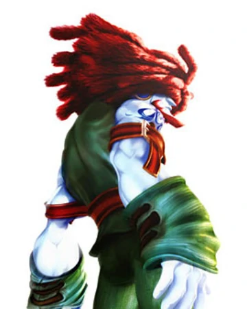
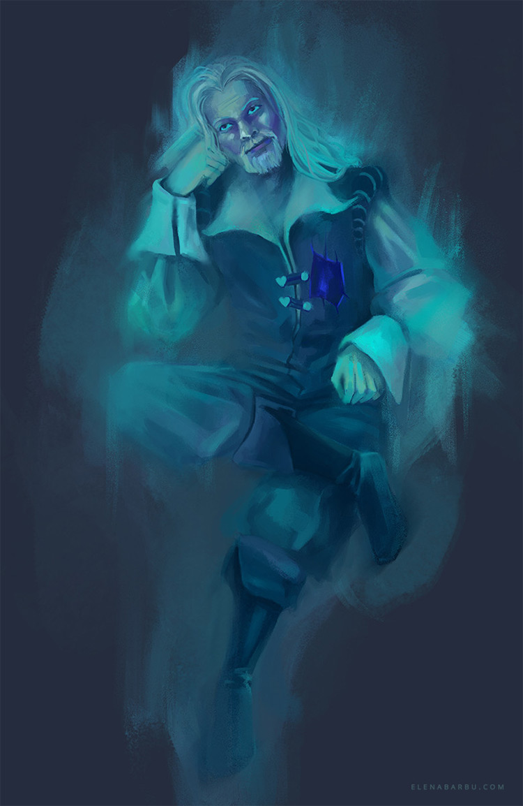
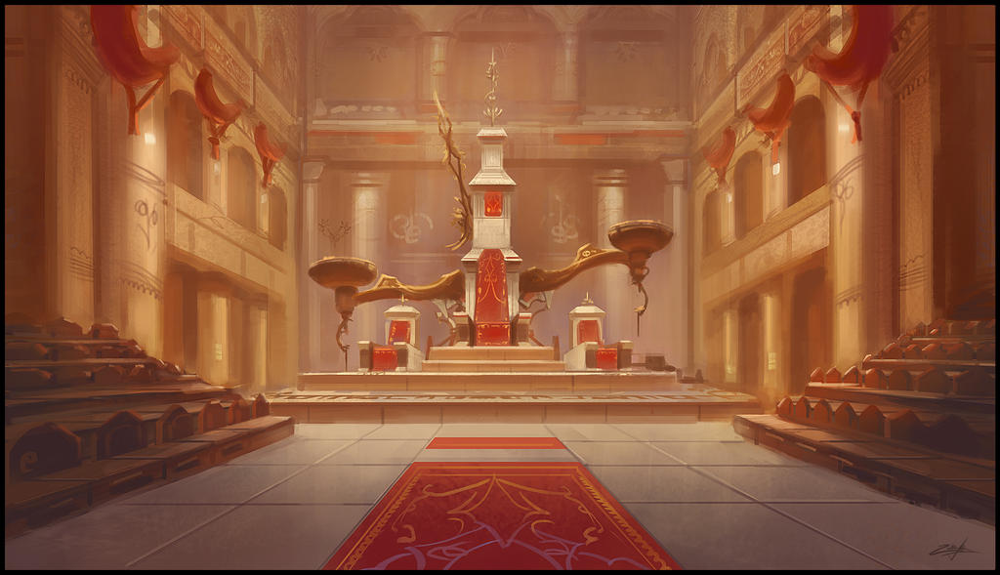
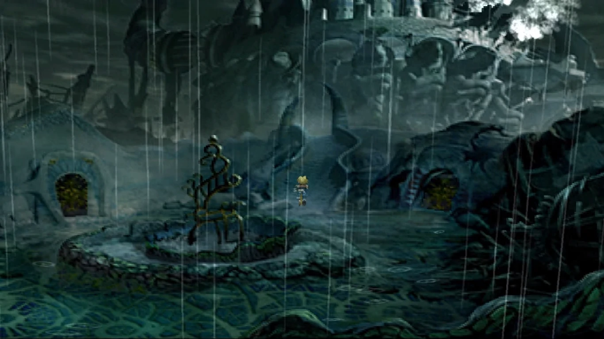

Premier Disque
Séance 1 : On se retrouve tous à l’auberge
Cinq personnes se réunnissent dans un bar pour être recruté par une femme avec un cache-oeil pour une mission (Beate, Gérénale d’Alexandrie). Ces gens sont :
| Nilo le Barde / Lathilius de Lorlimont |
Il se présente comme Nilo le Barde, élevé par une fée dans la forêt et ayant accompli de nombreux exploits dans le monde. Est en réalité Lathilius de Lorlimont, un fils de Grand Marchand de Tréno, et a volé l’ordre de mission de son maître Nilo dans l’espoir de faire ses preuves. Utilise de la magie bardique (enchantement). |
| Gadly le Vampire |
Baroudeur originaire de Gaza Est qui, lors d’un cambriolage raté, a été transformé en vampire. Son âme se désagrège, lui faisant perdre le contrôle de lui-même. Il est sensible au soleil, et réalise sa mission en échange d’un moyen de s’en protéger Il appartient à la lignée d’OstennFyre, avec la capacité de développer des dons d’anti-magie. |
| Fidzly l’apothicaire / mage chimérique |
Frère de Gadly, travaille comme apothicaire à Tréno. Ancien prêtre de Lumière à Gaza Est, a bravé l’interdit sur la magie pour devenir un mage chimérique et ressuciter ses parents, en vain. Voyage avec son frère pour chercher un remède à son état de vampire. Maîtrise une magie aujourd’hui disparue, en se connectant aux Chimères. |
| Rieroc le voleur / le Faucon Ardent |
Un voleur travaillant en indépendant à Tréno. Devenu le Faucon Ardent, tueur de nobles, qu’il considère responsables de la mort de son père et de la misère dans les quartiers pauvres. A tenté d’attaquer Beate, en vain. Elle l’a épargné en échange de ses services, et il porte un collier qui permet à la générale de le contacter. Compétence de voleur et d'assassin. |
| Nephixo le combattant / Taleb |
Un combattant elfique originaire de Lindblum. Ancien soldat, il a été bandit à la fin de la guerre, avant de chercher la rédemption en changeant de nom. Repéré par les services de renseignements de Beate, il accepte de travailler pour elle en échange d’un blanchiment de son casier judiciaire. Combattant épéiste. |
Chacun a ses raisons d’être recruté, mais tous ne savent pas qui est le commanditaire… Ils sont donc envoyés pour s’immiscer dans une soirée organisée par le Comte Rielas Rolforth (un des 12 Grands Marchands de la ville) et découvrir ce qu’il complote. Un groupe s’en prend à la commanditaire dans le bar, l’appelant “la générale” (elle est la Générale Beate d’Alexandrie), elle les teste alors pour voir comment ils se débrouillent.
Générale Beate
Séance 2 : Troubadour et assassinat
Le groupe se déguise en saltimbanques pour rejoindre la soirée. Ils rencontrent un autre saltimbanque, Chester, qui leur parle de la famille du Comte, avec son fils Riscan et sa fille. Ils s’éclipsent pour fouiller la maison en cachette et découvrent des documents parlant d’une attaque de plusieurs centaines de Gobelins prévue en collaboration avec un certain Darik, un mercenaire.
Ils s’apprêtent à partir quand le fils du Duc assassine son père et sa mère. Ils interviennent trop tard mais arrivent à sauver la sœur. Ils tentent de contrôler Chester pour faire diversion, mais celui-ci s’avèrera être un très puissant mage, et allié du fils du Duc. Ils les aidera néanmoins à fuir, mais par ruse : très vites le groupe est accusé d’être les responsables du meurtre, ils doivent donc fuir la ville…
Chester
Nilo et Gadly reçoivent néanmoins les récompenses promises : un coffre nacré pour Nilo qui ne dévoilera pas de quoi il s’agit (en vrai il n’en sait rien et il n’arrive même pas à l’ouvrir) et une bague de protection contre le jour pour Gadly.
Séance 3 : A la recherche du jeune étudiant
Soupçonné d'être les meurtriers à cause des manigances de Chester, le groupe (qui décida de s’auto-nommer les Insoumis) fuit vers Lindblum en se cachant dans un vaisseau, à l’aide de leur commanditaire. Ils sont recueillis par les Tantalas, un groupe de voleurs auquel avait un peu appartenu Gadly du temps de ses voyages avant son vampirisme (mais trop bagarreur à l’époque pour être accepté).
Lindblum
Bach, le chef des Tantalas, leur donne des infos concernant Darik, il serait responsable de la disparition d’un dénommé Marius, un jeune étudiant qui étudie l’histoire des Chimères. Ils enquêtent alors sur la disparition de Marius (en interrogeant sa meuf, elle est devenue quoi déjà ? Quel salow, il lui a pas donné de nouvelles!!).
L’enquête les amène notamment à l’université de Maître Toto, qui encadrait cette étude. Le bureau est verrouillé mais, avec l’aide du savant (et en trichant au lieu de résoudre l’énigme normalement), ils réussissent à obtenir les documents sur lesquelle travaillait Marius : une liste de Chimères associées à un nom de pierres. Pour Fidzly, qui sait qu’une pierre d’un type particulier est nécessaire pour se connecter à une Chimère, c’est une info clé !

Séance 4 : Le royaume des elfes
Continuant l’enquête sur Marius, le groupe est attaqué par un vieil homme assez glauque avec un Luth, qui invoque des squelettes, tout en insultant Nilo et en l’accusant de trahison. Ils arrivent à le mettre en fuite, mais la suspicion se crée dans le groupe.
L’enquête les mène finalement à Pinnacle Rock, où le groupe de Darik, le kidnappeur de Marisu, semble s’être rendu. Pinnacle Rock est une forêt à l’Ouest de Lindblum, où se trouve le royaume des elfes (à savoir que Nephixo est un elfe, mais elle précise n’avoir grandi qu’à Lindblum). Ils s’y rendent à dos de chocobo, mais se font attaquer par un Phacoche à l’entrée de la forêt. Gadly est sévèrement blessé mais ils remportent de justesse le combat, avant de tomber dans un traquenard par des elfes.
Comme Beate est considérée comme une héroïne pour avoir sauvé le prince Firenze, elle transmet un message à Rieroc à travers le collier qu’il porte et qu’elle lui avait donné. Le message leur donne accès, sans qu’ils sachent pourquoi eux-mêmes, au palais du roi.
Sur place Fidzly obtient une Sanguine, une pierre liée à Nosferatu, la Chimère Vampirique. Y voyant une opportunité de sauver son frère de son état, il réalise le processus de méditation pour s’y connecter. Il a alors une vision étrange, comme s’il se sentait très affaibli. Il voit alors Chester le regardant d’un air inquiet lui demandant s’il va bien. Puis la vision se retourne contre lui et il sent Nosferatu cherchant à le détruire, mais il parvient à se réveiller de justesse.
Le Roi des Elfes acceptent alors de raconter au groupe l’histoire de la Première Guerre Chimérique, où (TODO)
Séance 5 : la Transe du Faucon Ardent
Les elfes expliquent au groupe que des mercenaires humains et des gobelins ont été repérés à l’extérieur de la zone gérée par Isandir. Ils acceptent de les guider pour leur permettre de continuer leur enquête, mais semblent ne pas être prêt à intervenir directement dans la mesure où la menace ne les concerne pas.
Guidés par les elfes, le groupe remonte donc la piste des gobelins et de Marius, les deux pistes semblant liées. Ils repèrent alors le camp de gobelins, où ils aperçoivent un jeune homme correspondant à la description de Marisu. Ils attaquent le camp mais Marius est embarqué par les mercenaires qui l’emmènent dans la mine. Chester en sort alors et affronte le groupe en invoquant des ombres qui les séparent en deux groupes, et fait apparaitre des ombres qui les attaquent.
Il s’avère que les ombres n’étaient pas des invocations mais le résultat d’une illusion qui poussait les insoumis à s’affronter entre eux, jusqu’à ce que finalement Rieroc tue Nephixo d’un coup de poignard fatal.
Rieroc, découvrant qu’il avait tué son camarade, entre en transe. Un symbole apparut sur son front, celui du Faucon Ardent (ce qui ne manqua pas de terroriser Nilo, en tant que Noble qui se cachait ^^). Sous cette forme, il dégagea de puissantes flammes qui chassèrent Chester en l’obligeant à fuir, et ressucita Néphixo. Redevenu normal, il avait oublié ce qu’il venait de faire, et ignorait lui-même ce qu’il s’était passé…
Le groupe explore alore rapidement la mine, mais constatant la taille du groupes de gobelins et mercenaires, préfère s’abstenir d’attaquer et se voit obligé d’abandonner Marius. Ils découvrent néanmoins que ce tunnel est un ancien tunnel de transport entre Pinnacle Rock et Tréno, aujourd’hui oublié, et donc un moyen d’envoyer rapidement l’armée de bandits directement dans Tréno…
Séance 6 : Le donjon de Del’vaar
De retour à Isandir, ils assistent à une pendaison des Fidèles de Del'Vaar, un groupe de dissidents qui vénèrent les préceptes d’un dénommé Del'Vaar. Cet elfe (dont Nephixo reconnaît le nom comme étant celui de son père) était un scientifique qui militait pour étudier la fin de natalité des elfes. Celle-ci était en effet en baisse important, mais le Roi considérait que ce sujet d’étude était un sacrilège. Il avait été banni à Lindblum où il est mort, mais ses fidèles continuent d’enquêter en secret. Alors que les Insoumis assistent impuissant à cette condamnation qu’ils jugent excessive, ils sont contactés par la pensée par la mentaliste elfe Moïra.
Celle-ci appartient aux fidèles de Del’Vaar et leur demande de l’aide pour soutenir son groupe, en allant chercher une clé chez l’Inquisiteur, bras droit du Roi et chargé de poursuivre les fidèles. Cette clé est la clé du laboratoire de Del'Vaar lui-même. Une simple pensée auprès de Nilo le menaçant de révêler son secret aux autres, notamment à Rieroc le “tueur de nobles” suffit à le motiver à convaincre ses alliés d’accepter.
Ils vont de nuit chez l’Inquisiteur, qui semblait occupé avec sa femme… Mais une alarme se déclenche, et l’Inquisiteur les attaque en robe de chambre, un manque de matériel de défense qui lui sera fatal et provoquera sa décapitation.
Maia, qui est en fait membre de la police d’Isandir, n’est que moyennement satisfaite de leur mission mais assure qu’elle couvrira leurs arrières pour éviter qu’ils soient suspectés. En échange, elle leur demande de se rendre au laboratoire pour récupérer le grimoire de Del’Vaar, le laboratoire étant potentiellement piégé.
Sur place, ils tombent effectivement dans un piège, mais survivent de peu. Ils tombent alors sur un Doppelganger prisonnier aussi rigolo que flippant, mais refusent de prendre le risque de le libérer. Ils affrontent alors un vampire (de la ligné du Chasseur, d'après Ostenfyrre, le géniteur de Gadly qui semble lui parler dans sa tête de temps en temps). Puis ils trouvent finalement le grimoire intitulé “Projet Nephixo” qui évoque un projet mystérieux visant à transformer les gens en “et découvent via un portrait que Del'Vaar est en fait connu de tout le groupe : il est le père de Nephixo (de son vrai nom Taleb, qui avait choisit son pseudo sur la base de vieux souvenir d’enfance quand son père parlait de son projet), mais aussi Ravadel le Prêtre qui a incité Fidzly à apprendre la magie chimérique, et Ardonis le chef du groupe des Bardes auquel appartient Nilo/Lathilius, l’homme qui avait embauché Gady pour le cambriolage qui a provoqué sa transformation en vampire et…. le petit copain de la soeur de Rieroc.
Delvar / Ardonis
Séance 7 : Sur la piste des Bardes
Couverts par Moïra, ils quittent la forêt et retournent à Lindblum, avec une lettre transmise par la mentaliste à donner à Beate de la part du chef de la Résistance. Celui-ci s’avère être le Prince Firenze qui tente de faire face à la fermeture d’esprit de son père, grâce à l’aide d’une alliance avec Beate.
A Lindblum, le groupe rencontre la Reine Grenat qui accompagnait Beate, et qui s’inquiète du complot qui se trame à Tréno. Elle et Beate informent les Insoumis que leur prime avait mystérieusement disparu, sans qu’ils aient eu le temps d’intervenir, ils ignorent comment ou pourquoi. Elles les envoient néanmoins à Tréno pour continuer leur enquête.
Ils enquêtent alors spécifiquement sur Ardonis en tant que petit ami de la soeur de Rieroc, la piste la plus récente, bien qu’ignorant clairement le lien entre cette affaire et le complot ourdit par Chester, mais refusant d’y voir une coïncidence. Grâce à Beate, ils apprennent qu’un des agents secrets d’Alexandrie nommé Roman est celui qui a repéré Gadly et Fidzly, ainsi que Taleb, et proposé Nilo (le vrai) : ce Roman travaille pour Ardonis d’après Nilo (le faux), c’est donc lui le point commun qui a réuni le groupe.
En enquêtant sur lui, ils fouillent sa maison et tombe sur un cercueil dans lequel se trouve Ostennfyre, le Vampire Original de Gadly, prisonnier. Ils entendent le barde parler à son chef en évoquant que “seul Rieroc est important” et qu’il faut récupérer absolument “le coffre nacré” (celui que le faux Nilo a reçu de Beate) en se débarrassant du traître. Le groupe est repéré, alors ils réussissent à tuer le Barde en profitant de l’effet de surprise. Mais les autres Bardes arrivent vite après et le ressuscitent, tout en immobilisant et assomant les Insoumis qui finissent prisonniers.
Roman
Ils se réveillent alors, découvrant qu’ils sont prisonnier du barde Yazzul, le tristement célèbre nécromancien, qui les laisse au soin de son apprenti pour les torturer (sauf Rieroc qui est bien installé en comparaison des autres). Mais Gadly perd le contrôle et la version “Vampire” prend le dessus, brise ses chaînes et tue le geolier, pour se retourner finalement vers ses camarades…
Séance 8 : Yazzul le Nécromancien
Gadly réussit à reprendre le contrôle de lui-même grâce au soutien psychologique de ses camarades. Ils envisagent de ne pas libérer Nilo tant qu’il ne révèle pas son lien avec les Bardes, mais finissent par prendre le risque de lui faire confiance. Ils parcourent alors le donjon des bardes, trouvant notamment un nouvel instrument pour Nilo, un étrange kalimba spectral (qui s’avère être un instrument de Terra), ainsi qu’un appareil de Terra servant à bloquer la magie. Ils tombent alors sur Yazzul qui invoque les spectres des amis de Gadly morts lors du cambriolage, mais cela ne suffit pas à stopper le groupe qui le tue et s’acharhe à coup de hache pour empêcher sa résurection.
Yazzul
En remontant, pas de chance, ils tombèrent après nez à nez face à tous les autres Bardes réunis dans une taverne, qui leur sert apparemment de base. Leila, la barde dotée d’une conque, descend et trouve le corps de Yazzul “très difficile à ressuciter”, ce qui énerve Ardonis qui ordonne de tous les tuer. Mais alors les parents de Lathilius (le père un Grand Marchand de Tréno, la plus haute autorité en dessous de celle du Roi) les sauvèrent, révélant l’identité du jeune barde. Ardonis est obligé de les laisser partir.
Séance 9 : Pacte divin
Le groupe discute avec les parents de Lathilius, qui tentent de convaincre leur fils de rester en sécurité. Finalement, ils acceptent de le laisser repartir et promettent d’envoyer quelques gardes pour défendre les quartiers pauvres, et mettent la famille de Rieroc en sécurité, elles travailleront pour la mère de Lathilius.
Le groupe est alors accosté par un gamin des rues qui prévient Rieroc, par message codé, que Tarask, un agent des services secrets d’Alexandrie, les attend chez Sha, sa protectrice qui gère l’orphelinat. Tarask les informent avoir une piste au sujet d’un dénommé Lord Pritchard, un magicien qui aurait travaillé avec Rolforth, une occasion pour le groupe d’en savoir plus sur leur plan. Une occasion aussi d’aller à Alexandrie pour obtenir un navire à moteur fonctionnant sans Brume, pour aller jusqu’à Madahin-Salee pour interroger Eiko sur Nosferatu.

Tarask
Le vaisseau du groupe est malheureusement retenu à quai suite à une accusation de contrebande, un crime très grave dans la ville marchande ! Ils suspectent rapidement les Bardes, mais ont besoin de quelqu’un avec une haute autorité pour le débloquer. Ils vont alors voir le Consulat d’Isandyr pour obtenir de l’Emissaire Elfique le déblocage de leur vaisseau, et de l’aide pour lutter contre l’attaque de Chester, les elfes acceptant dans le but de lutter contre Nosferatu. Puis ils sont rejoints par Biggs et Wedge, deux matelots au service de Tarask.
En chemin, ils subissent une attaque d'un groupe de Cocatryx. Luttant contre les créatures tout en limitant l’incendie provoqué par l’attaque de la plus grande créature, ils doivent s’organiser comme ils peuvent tout en tenant la barre, le pilote ayant été tué. Ils arrivent à venir à bout des bêtes mais, propulsés par l’attaque finale de la plus grande créature, Fidzly et Rieroc chutent vers le vide, le voleur inconscient.
Fidzly est alors contacté par les Chimères à qui il est connecté, à savoir Hadès, Ifrit et Marthym, qui le sauvent en le désignant comme l’émissaire des Chimères. Ils lui ordonnent de se rendre à Madahin-Salee pour rencontrer Eiko, la “dernière véritable invokeuse”. Ils lui expliquent que Nosferatu était sensé être mort mais a échappé à son sort, ils ignorent comment. Ils lui disent qu’un 3ème invokeur existe, en plus de Grenat et Eiko, mais ignorent qui il est. Et enfin, ils lui révélent aussi la véritable identité de Rieroc, le Phoenix, scellé sous un corps humain par Eiko qui le croit mort aujourd’hui.
Séance 10 : Le meurtre de Lord Pritchard
En arrivant à Alexandrie pour interroger Lord Pritchard sur ses liens avec Chester, ils apprennent qu’ils arrivent trop tard car il a été assassiné. Fidzly invoque son Spectre, qui accepte de parler si son crime est résolu. Parmi les suspects se trouve le "dernier" membre de la famille Mullan, Bill Kulligan. Cette famille est une ancienne famille de magicien de Tréno où les membres deviennent fous en grandissant à cause de visions (il s’avèrera plus tard que sa tante a aussi eu un enfant, son cousin…).
Aidé notamment des visions de Kulligan, le groupe résout le crime, mais découvre alors que Pritchard ne pouvait pas ne pas connaître son identité. En réalité, il cherchait à gagner du temps pour posséder Béate et attaquer le groupe. Doté de sa puissance, mais pas forcément de son expérience au combat, il met le groupe en péril mais celui-ci réussi à l'exorciser à temps.

Libéré de son mari, le fantôme de la femme de Pritchard donne alors les infos qu'ils recherchent: Nocturne, e Roi de Tréno est en réalité la Chimère Nosferatu, coincé sous forme humaine lors de sa défaite dans la Première Guerre Chimérique où il aurait dû mourir. Il avait cependant réussi à mettre en place un système où il mettait une femme enceinte et transférait son âme dans le corps de son enfant. Mais cette fois, avec l’aide d’un dénommé Kuja et sa technologie de Terra, il avait réussi à avoir 2 enfants : celui de son propre corps en tant que Nocturne et celui de son fils/frère Chester. Celui-ci cherchait un moyen de libérer son frère de sa forme mortelle, un rituel que lui seul pouvait faire en tant que frère biologique. Et pour réaliser ce rituel, une source d’âme importante était requise. Autrement dit, un massacre, qui allait avoir lieu le jour de l’anniversaire de Chester et Nocturne, dans quelques semaines à Tréno.
Séance 11 : Le test de haute-prêtrise de Fidzly
Pour stopper ce plan de Chester, le groupe décide de partir pour Madahin Salee chercher l’aide d’Eiko sous les recommandations des Chimères. Comme ils l'apprendront plus tard, elle a renoncé à son titre de Princesse Adoptive de Lindblum à 10 ans après avoir tenté de ressusciter Bibi, le petit mage noir, et vit isolée dans les ruines du royaume des Invokeurs, refusant même de parler aux Chimères. En effet, furieuse d’avoir échoué dans sa résurection et sous le coup de sa colère enfantine, elle a punit le Phoenix de son échec en l’enfermant dans une forme mortelle, mais était persuadé d’avoir échoué et l’avoir tué. Son isolement était alors sa punition. Il s’avèrera qu’elle avait été contacté par les Bardes qu’elle avait rejoint un temps, mais finit par abandonner en découvrant que la base même de leur plan était impossible sans le Phoenix, la mission des Insoumis ayant finalement mené à ce qu’elle retourne auprès d’eux…
Toujours est-il que pour se rendre à Madahin-Salee, le groupe passe par Condéa, une des villes de l'Empire d'Archadia, l'empire des mères-matronnes. Ils y rencontrèrent le chef de la Guilde local, les guildes étant connectés pour former entre elles la Guilde de l'Ombre Avec son aide, ils apprirent que pour rejoindre Madahin-Salee, une terre sacrée pour Conda, il fallait être un prêtre de la Lumière, un ordre proche de celui de Gaza Est. Fidzly tenta de passer l’épreuve, incluant des dilemmes moraux complexes. Cependant, la dernière épreuve étant mortelle en cas d’échec (un test de Foi, assez peu du goût de Fidzly), ils cherchèrent une alternative.
La mère-matronne locale, ayant ouïe dire de l'arriver d'un émissaire d'Alexandrie (Lathilius, sous une fausse identité à nouveau), les invita. Ils y découvrirent un complot pour prendre la place de l'Impératrice. Plutôt que de la soutenir, ils cambriolèrent la maison de nuit et découvrire un des 13 Mages Noirs, la Mère-Matronne tentant de braver l’interdit sur la création des Mages-Noirs en l’étudiant. Le groupe affronta les gardes, et libérèrent le Mage Noir qui leur promit un remboursement de dette un jour.
Le groupe profita ensuite de la représailles des 13 Mages Noirs contre Condéa et leur mère-matronne pour aller sur la Terre sacrée, et se rendre chez Eiko. Sur place, Fidzly expliqua à l’invokeuse qui était Rieroc, et les autres membres du groupe l’apprirent par la même occasion, Rieroc inclut.
Eiko
Séance 12 : Le Palais du Désert
Pour stopper l'invocation de Nosferatu, Eiko envoya le groupe dans un lieu appelé le Palais du Désert. Ce Palais, considéré auparavant comme le Palais de Kuja, était un lieu appartenant au magicien de Terra. Dès lors, Eiko espérait que le groupe y trouverait un moyen d’ouvrir le Coffre Nacré, lui même un objet de Terra. Cet objet, porté par Lathilius et volé aux Bardes, contenait en effet un artefact essentiel à leur plan : le Coeur de l'Invincible, un objet qui, utilisé correctement, permettrait de contrôler une Chimère, et donc de stopper Nosferatu si son invocation échouait à être stoppé.
Le groupe explora le Palais du Désert, qui était un lieu apparemment doté d’une certaine conscience assez enfantine, comme si le lieu voulait apprendre à connaître ceux qui l’exploraient. Ils se retrouvèrent alors dans des univers artificiels
- ils se retrouvèrent prisonniers d’un clan de bandits, celui que Taleb dirigeait durant sa sombre époque après la guerre de Lindblum. Taleb du alors l’affronter et décida de l’épargner, elle eu alors une vision de lui même avec une peau doré (une vision de sa transformation en Immortel, même s’ils ne le surent que beaucoup plus tard)
- dans l’attaque du palais de Gaza Est par les mages noirs de Kuja, à la mort des parents de Fidzly et Gadly), où Fidzly fit le choix d’accepter leur mort et d’aller de l’avant
- dans la période de l’adoption de Rieroc où il vécu aussi le moment de sa mort et refusa la vengeance
- dans un face à face entre Lahtilius avec son père qui désapprouvait son choix d'être mage en dépit de son talent, mais où Lathilius refusa de suivre les demandes de son père
- dans un autre monde où le Palais lui-même ne contrôlait plus la zone, possédée et maitrisée par Ostennfyre le sombre, un des cinq vampire originels, qui avait engendré Gadly. Celui-ci était prisonnier des Bardes, mais contre la promesse que les PGs préviendrait les autres engendrés pour le libérer, il leur révéla toutes ses connaissances sur la société vampirique, et sur Nosferatu. l leur parla en particulier des cinq vampires originels, à savoir lui-même (un ancien mage de Tréno), Al’Jadkana la mentaliste, Samar’Nitz l’Invokeur, TODO Il termina aussi le processus de transformation de Gadly, qui choisit de perdre son âme pour de bon sans retour en arrière possible, mais conserva en échange son esprit et éviter ainsi de perdre le contrôle
OstennFyre
Enfin, ils rencontrèrent l'esprit du Palais, une créature apparenté à une Chimère leur semblait-il, bien qu'elle ne fait pas partie des Chimères connues, et sans compter une différence étrange que Fidzly ne pu caractériser. Le Palais ne leur reconnu par la capacité de devenir son Maître mais accepta de les aider en leur ouvrant un portail vers Oeilvert, un lieu dénuéé de magie, où il manquèrent d'être exécuté par Rena pour infiltration du territoire des Génomes.

Séance 13 : En vue de la bataille…
A oeilvert, ils rencontrèrent les Génomes de Terra, ainsi que le roi-consort d'Alexandrie, Djidane, présent pour réaliser un traitement qui, l'espérait-il, lui permettrait de donner un enfant à sa femme. Il intervient d’ailleurs à temps pour empêcher que le groupe soit executé, d’autant plus que l'anti-magie d'Oeilvert eu un effet très néfaste sur Gadly, la magie le maintenant en vie s'effaçant peu à peu, aussi ne tardent-ils pas à vouloir repartir. Ils en profitent pour ouvrir le coffre nacré et récupérer le Coeur de l'Invicible.
Incapable de reprendre le portail dans l'autre sens, ils convainquirent Djidane de les accompagner, puis utilisèrent son vaisseau pour se rendre à Tréno, où ils arrivèrent deux
jours avant la bataille. Pendant le trajet, Lathilius en profita pour apprendre à utiliser l'artefact, qui semblait pouvoir s'utiliser par une manipulation similaire à celle d'un instrument, son talent inné pour la musique lui permit d'en faire quelque chose, mais il était encore loin de le maitriser correctement.
Sur place, ils recrutèrent une armée pour s'opposer à l'attaque des Gobelins. Sachant que prévenir les autorités impliqueraient potentiellement que Chester décale simplement son rituel ailleurs en un lieu et une date inconnue, le groupe préféra laisser l’évènement avoir lieu tout en préparant une défense correcte.
Ils recrutèrent des voleurs auprès de la mafia locale, dirigée par Lami (que Rieroc connaissant bien, il a bossé pour elle à une époque, un violent passage par la fenêtre l'ayant convaincu de bosser en indépendant), des elfes auprès du Consulat qui désirait s'opposer à l'arrivée de Nosferatu, des soldats de la maison des Lorlimont, Lathilius ayant convaincu son père de les aider en échange de ses fiançailles avec une noble de Tréno, quelques apothicaires collègues de Fidzly en soutien, et bien sûr des habitants qui répondirent à l'appelles des Insoumis de défendre leur foyer.
Séance 14 : La Bataille de Tréno
Une bataille eu donc lieu dans les quartiers pauvres, ciblés par le Duc Riscan Rolforth (qui pensait que cette action mènerait à une “épuration de la ville” en la débarrassant des pauvres, ignorant que ses agissements mèneraient à l’invocation de Nosferatuà. Mais la bataille se déroula comme prévu, les Insoumis réussissant à repousser les forces adverses qui n'avait pas prévu autant de résistance. Ainsi, l'invocation de Nosferatu fut perturbé, et lorsqu'il apparu, détruisant le toit du palais royal, il était déjà fortement affaibli. La reine Grenat d'Alexandrie invoqua alors la Chimère dragon Bahamut, et Eiko invoqua la Chimère Marthym, qui attaquèrent Nosferatu.
Pendant ce temps, les Insoumis firent face à Chester, qui voulait les empêcher d'utiliser le Coeur de l'Invincible sur Nosferatu. Gadly, sous l’influence de Nosferatu, se rangea aussi au côté de Chester. Mais lorsque, faisant preuve de son talent inné pour les arts magiques, Lathilius réussit à s'emparer du contrôle de Nosferatu, Chester perdit ses pouvoirs et s'évanouit, et les Insoumis lui mirent un collier de blocage de magie. Tout semblait sous contrôle, mais...
Nilo (le vrai), le maitre de Lathilius, apparut pour féliciter son apprenti, et surtout lui réclamer le coeur de l'invincible, connecté à Nosferatu. Etavec lui, se trouvait l'ensemble des Bardes. Pendant ce temps, alors que Bahamut s'apprêtait à achever Nosferatu, il fut transpercer par une attaque de Marthym qui se plaça alors en protection des Bardes, auprès de qui se trouvait Eiko. Face à la supériorité numériques et magiques de leurs ennemis, Lathilius réagit en reprenant le controle de Nosferatu qu'il envoya contre les Bardes.
Il réussit un temps à repousser Marthym, avant d'être transpercé par une attaque en traitre de Taleb, qui avait rejoint la cause de son père. Grâce à cette double trahison, Ardonis s'empara alors du Coeur de l'Invincible, et accomplit un rituel lui permettant de contrôler à son tour Nosferatu. Yazzul, qui se maintenait en vie uniquement grâce à des sorts de nécromancie, rendit l’âme lors du processus.
Mais le chef des Bardes ne s'arrêta pas là, car il avait Ostenfyrre en sa possession, et semblait vouloir utiliser Nosferatu et Ostenfyrre réunis pour réaliser un rituel. Perdant le contrôle de lui-même, Gadly attaqua pour tenter de sauver son Maître, et réussit à l'attendre malgré la Chimère qui s'interposait, grâce à l'aide de ses compagnons fortement blessés. Il embrassa alors son Maitre, (dafuq?) avant d'être projeté en arrière, inconscient.
Grâce à leur rituel, les bardes forcèrent Nosferatu à tuer Ostenfyrre, et insufla l'énergie noire qui se dégagea de son corps à l'intérieur de Taleb. La magie se dégageant de lui, issue aussi bien de Nosferatu que des réminescences de la résurection du Phoenix qu'avait accompli sur lui Rieroc, le mena à une transformation vampirique d'un genre nouveau, sa peau se couvrant de reflet doré. Puis Taleb tomba inconscient. Les Bardes s'enfuirent alors, et Marthym lança une attaque sur Tréno pour empêcher les poursuites.
Deuxième Disque
Séance 15 : Le procès
Après la bataille de Tréno, Gadly était dans le coma, durant lequel il vécu des souvenirs mélangés dans sa tête, revivant plusieurs périodes de sa vie en boucle. Jusqu’à l’arrivée d’une autre présence, celle d’un homme qui se désigna sous l’identité de Camus, un prêtre panthéonique (portant un masque comme signe de son déni d’identité au profit de celui des Chimères qu’il vénère). Cet homme, doté de visions, savait qu’il devait les aider, en commençant par Gadly. Ainsi il l’aida à se réveiller, mais Gadly savait à présent qu’il n’était pas seul: OstennFyre avait transféré son esprit dans le corps du jeune vampire.
Pendant ce temps, les autres étaient prisonniers à Lindblum depuis un mois, et en l’absence de Chester qui aurait été récupéré par ses fidèles puis kidnappés par les Chiméristes, voire tué, pas de coupable… Une servante vient les voir, il s’agit de Finéla, amie d’enfance de Rieroc : le groupe est considéré comme des héros à Tréno, surtout dans les quartiers pauvres, et elle assure qu’ils seront aidés si le procès se passe mal.
Ils apprirent lors d’un procès qu’ils étaient accusés par le Conseil des Brumes, surtout le Roi Cid, d’être responsable des évènements et de l’invocation de Nosférat, et d’être des anciens alliés des Bardes qui se sont fait doubler ! Ils apprennent aussi que la famille de Lathilius est morte dans l’attaque, sauf son frère qui “défendait le château royal”, et qu’il a depuis pris le pouvoir, ce qui fait de Lathilius l’héritier direct..
Grenat Cid Puck
Les Insoumis furent jugé par Grenat (qui ne put beaucoup les aider car sa position était affaiblie par son ingérence à Tréno), et plutôt aidé par Puckéro (dit “Puck”) le Prince de Bloumécia représentant son père. Mais le Roi Cid, ancien père adoptif d'Eiko, leur était très hostile. Sentant la sentence approcher, ils reçurent à nouveau la visite de Finela qui avait réussi à leur apporter leurs armes.. Elle s’était infiltré avec l’aide des Tantalas pour les prévenir : la famille de Lathilius a en fait été victime d’un complot du frère de Lathilius pour prendre le pouvoir en éliminant les autres membres de sa famille. Mais leur mère était avec la mère et la soeur de Rieroc au moment de l’attentat, et ces dernières l’ont aidé à fuir.

En revanche, il allait falloir s’évader car le procès était perdu d’avance. De plus, des assassins avaient été envoyés contre eux par Tali (le 3ème membre du trio d’anciens amis avec Rieroc et Finela), qui jaloux du succès de Rieroc avait participé à l’attentat contre la famille De Lorlimont. Ils apprirent aussi que le royaume d’Isandyr, à Pinnacle Rock, était sous un dôme créée par la Chimère Carbuncle, autrement dit par Eiko, et qu’apparemment Ardonis et ses bardes s’étaient emparés du royaume des elfes pour en faire sa base.
Alors que, le soir, ils s’attendaient à recevoir la visite des assassins, c’est Gadly et Camus qui arrivèrent, ayant profité de l’infiltration des assassins pour entrer aussi. Grâce à eux, ils purent récupérer leurs armes et s’évader. Ils croisent le pauvre vendeur de Pimentankou dans une cellule, puis tombent sur le groupe d’assassins qui pensaient qu’ils seraient désarmés. Ils réussissent à se défendre face à l’attaque, puis s’évader de la prison. Ainsi commença leur vie de clandestin…
| Camus le Prescient / Chester |
Il se présente comme un prêtre Panthéoniste (des fanatiques portant un masque pour nier leur identité propre comme signe de dévotion aux Chimères). En réalité, il s’agit de Chester, frère de Nosferatu qui, libéré de son contrôle, cherche à se venger. Il possède des visions qui l’ont mené jusqu’au groupe, et une magie innée par sa mère, une De Mullan, qui le condamne aussi à devenir fou. |
Séance 16 : La Guilde des Voleurs
Le groupe décide de se rendre à Tréno pour aller s’assurer que la mère de Lathilius e la famille de Rieroc sont en sécurité. Avec l'aide de Finela et des Tantalas, ils réussissent à faire le voyage comme passagers clandestins, misant sur le fait que Tréno serait la ville où justement personne ne s’attendrait à les chercher.
Une fois à Tréno, ils enquêtèrent sur le meurtre de la famille de Lathilius, suite au coup d'état réalisé par le frère de Lathilius. Ils se rendent chez Sha qui assure leur sécurité pour un temps. Ils apprennent alors que Tali a capturé les personnes qu’ils recherchent, à la fois comme monnaie de négociation avec le frère de Lathilius et comme traquenard pour Rieroc, sa haine de son ancien ami est incompréhensible pour Finela.
Laissant Finela en sécurité, le groupe fonce dans la taverne servant de base à la guilde des voleurs. Parcourant la planque, ils tombent sur un voleur qui porte un plan des lieux. Ce plan s’avèrera être un faux qui les fait tomber dans un piège. Mais en dépit des différents pièges et obstacles, ils atteignent d’abord la prison où se trouve Lamie, blessée depuis la bataille de Tréno, qu’ils libèrent.
Lamie
Ils atteignent ensuite une arène ou Tali semblait vouloir se jouer d’eux. Mais une impressionnante tirade de Camus suffit à retourner la situation en détruisant l’autorité de Tali qui prit la fuite, malgré sa haine évidente et incompréhensible de Rieroc. Ainsi fut sauvé les prisonniers, incluant Lamie qui reprit le contrôle de la guilde des voleurs de Tréno.
Ils reçurent alors la visite d’un jeune homme venu de Gaza Est pour porter un message à Fidzly : la fille (dont il ignorait l’existence) était en danger sous l’impulsion d’un groupe de fanatique ayant prit le pouvoir. Ainsi Fidzly abandonna un temps ses compagnons.
Séance 17 : Les colonies
Avec le soutien de Lamie, ayant repris le pouvoir dans la guilde des voleurs de Tréno, les Insoumis partirent pour les Colonies du Continent Oublié, en laissant Fidzly se rendre à Gaza Est sauver sa fille des fanatiques. En effet, une vision de Camus les avait envoyé sur la piste d’un lieu nommé le Palais Monde. Une recherche secrète dans la bibliothèque de l’université de Tréno permet de cibler deux pistes possibles : le Palais du Désert déjà exploré précédemment, et un lieu nommé le Château d’Ypsen dans les colonies, piste qu’ils favorisent.
Ils se dirigent donc vers les Colonies, spécifiquement à Mabir, la ville principale où Gadly avait justement réalisé son cambriolage l’ayant transformé. Sur place, le groupe rencontra à nouveau Bill Kulligan qui accosta étrangement Camus, sentant qu’ils partageaient tous les deux le poids des visions et la destinée d’une folie à venir. Il est embarqué par les médecins qui s’occupent de lui.
Sur place, ils apprirent que les vampires étaient progressivement devenu exposés à la connaissance des citoyens, mais de plus en plus mal vu avec l'arrivée de l'élection. En effet, l’Architecte avant passé un pacte avec OstennFyre pour que ses vampires assurent la protection des colonies, mais après sa mort (inconnue des gens), ses vampires deviennent instables.
Une élection était à venir dans les Colonies, les deux favoris étant l’Architecte Simonnet qui avait aidé l’intégration des Vampires en tant que protecteurs des citoyens des colonies, et Ruthwyn, fervent opposant et allié aux Bardes.
Sous l’impulsion d’OstennFyre qui parlait de temps en temps dans la tête de Gadly, ils rencontrent Diliryovana, l’ancien bras-droit du vampire originel. Elle leur apprend qu’un complot vise à affaiblir l’Architecte en accusant un vampire du meurtre violent d’une petite fille le jour même de l’arrivée de Diliryovana. Elle suspecte bien sûr Ruthwyn. Grâce à leur intervention, l’assassin fut stoppé, ce qui mit l’Architecte dans une meilleure situation pour l’élection à venir.
Séance 18 : Le Château de l’Endormi
Avant de quitter Mabir, le groupe décide de récupérer Kulligan pour qu’il les accompagne, malgré ses crises. Louant des Chocobos, le groupe se dirige au nord de la ville jusqu’au Château d’Ypsen, autrement nommé le Château Miroir qui, tout comme le Palais de Kuja, serait une possible piste pour trouver le Palais Monde, important d'après la prophétie de Camus.
Laissant Kulligan à l’auberge, il parcourt les lieux, découvrant une étonnante inversion des effets de leurs pouvoirs. Ils découvrirent un moyen d’accéder à une pièce centrale, mais qui requièrt de passer par 4 pièces dans les tours environnantes. Chaque pièce portait une inscription dans un langage étrange, en l'occurrence du langage de Terra. Ils explorent alors chaque tour en regardant l’inscription auparavant :
- “Le miroir reflète ton esprit” : 4 formes fantomatiques apparaissent dans un miroir, prononçant un poème, chaque verset prononcé par une forme différente :
Un a un, mes compagnons tombèrent autour de moi,
Mais je les abandonnai, je devais suivre la voie.
Mon bras vengeur dans la nuit s'élèva,
Et sur mes ennemis dans la nuit les achèva.
Mais les ombres cachaient celui qui me frappa
Et au plus profond de moi, me changea
Et quand plus tard, je voulu rentrer chez moi
La trahison m'avait dépouillé sans émoie.
Le groupe comprit que chaque verset correspondait à l’un d’eux (Camus, Rieroc, Gadly et Lathilius), en touchant chacun sa forme, le miroir se mit à briller
- “Le miroir reflète ton corps” : des formes apparurent, identiques aux Insoumis. Mais les originaux étaient soumis à l’inversion, ils durent apprendre rapidement à s’adapter, attaquant avec leurs sorts faibles et leurs armes de mauvaises qualités jusqu’à vaincre les ennemis
- “Le miroir reflète ton âme” : ils ne surent jamais ce qui aurait dû se passer car, en présence de Gadly, le miroir explosa.
- “Le miroir reflète ta douleur” : des formes étranges, abstraites, apparaissent face à chaque insoumis, s’infligeant des dégats qui étaient répercutés sur les originaux. Il fallut rapidement les soigner pour en venir à bout.
A chaque fois qu’une épreuve se terminait, une voix retentissait, exprimant des éléments d’une histoire sur le lieu :
- "Il fût un temps où régnait la Paix. Sous la douce lumière de nos deux soleils, les Hommes vivaient en harmonie, et les Dieux leur parlaient, et leur transmettait leur sagesse. Puis le Destructeur est arrivé. Il abusa les Dieux pour connaître leurs plus mystérieux savoirs, et en secret, il créa les démons".
- "La Guerre des Dieux ravagea le monde. Le Destructeur mena ses armées sur les instances dirigeantes du monde. Alors les Sages se réunirent et appelèrent les Dieux en aide pour balayer l'attaque du Destructeur, mais celui-ci invoqua ses Démons. Nombreux d'entre eux périrent, mais au final, le Destructeur détruisit les Dieux et le monde fut siens.
- "Le Monde se mourrait. Le règne du Destructeur prendrait fin car son royaume soufrait du mal inéluctable : la fin du cycle était proche. Alors le Destructeur mis son savoir au service de la survie de son peuple. Il déplaça le Palais-Monde sur une autre étoile et y prépara son asservissement."
- "L'inconnu vint à nous, de longues années plus tard. Il recherchait quiconque pourrait lever sa malédiction, alors le Destructeur s'offrit de lui apporter le repos. mais l'Inconnu perça les intentions du Destructeur sur son monde, alors il s'empara de la Forteresse-Miroir et prit la fuite, puis scella la route entre les mondes."
Une fois les épreuves réalisées, le groupe accéda à la salle centrale où se trouvait le corps d’un Vampire Original, celui de Samar’Nitz, l’Invoqueur, protégé par un Golem que le groupe réussit à pousser dans le vide, faisant tomber avec une épée qui semblait d’une grande valeur et puissance. Mais malgré leurs tentatives, ils n’arrivent pas à réveiller le Vampire qu’ils transportent alors dans une charrette. Ils sont alors attaqués par un groupe de 3 Immortels, des vampires “nouvelle génération” créée par Taleb. Ils arrivent à les vaincre, aidés notamment par des soldats au service d’Annisa de Ciroldie, la fiancée de Lathilius.
De retour en ville, elle oblige d’ailleurs Lathilius à retourner à Tréno pour préparer sa prise de pouvoir contre son frère, pendant que les autres décident d’aller au Sud pour traverser le désert en direction de Daguérréo, leur objectif d’après la dernière vision de Camus.
Séance 19 : Lang’Rakhel le Divin
Le groupe part pour le Sud pour atteindre le plus rapidement Daguérréo tout en évitant les voies principales, où ils pourraient se faire arrêter. En chemin, ils sont attaqués par un Vampire, un de ceux de la ligné du Chasseur. Lui et ceux de sa lignée sont devenus fous et attaquent même de jour malgré la douleur provoquée par le soleil.
En chemin, ils rencontrent un groupe de nomades. Ceux-ci semblent se préparer à partir en guerre, comme c’est souvent d’usage chez les nomades aux traditions guerrières. Les Insoumis expliquent qu’ils recherchent Lang'Rakhel le Divin, le chef d’un des 17 clans, mais il s’avère que c’est le clan qu’ils s’apprêtent à attaquer, en dépit des faibles chances de succès face à ce clan trop puissant. Mais la victoire n’est pas plus importante que la fierté de mourir au combat !
Lang’Rakhel
Obtenant des informations sur la localisation du clan de Lang'Rakhel, ils s’éclipsent durant la nuit pour rejoindre le clan en question. Sur place, ils sont amenés devant le chef du clan qui se prend pour un dieu et qui est vénéré en tant que tel. Expliquant leur situation, ils obtiennent un entretien privé avec lui, qui s’avère être parfaitement lucide, luttant contre l’ennui en s’amusant à se faire passer pour un Dieu auprès de débiles de guerriers. Il leur est de suite très sympathique.
Le clan est alors attaqué, les Insoumis décident de participer un peu au combat pour se faire bien voir pendant que le Divin s’occupe de réveiller l’Endormi.Et au milieu du combat, un volcan apparait et Ifrit terrasse le clan adverse : Samar'Nitze était réveillé et n’avait pas envie d’attendre la fin du combat pour parler aux Insoumis alors il a accéléré les choses.
Samar’Nitze
Il s’avère que Samar'Nitze est un être immortel cherchant à se tuer, mais en vain. Face aux récits des Insoumis, il envisage de rejoindre plutôt les Bardes qui pourraient le tuer grâce à Nosferatu, mais préfèrera aider les Insoumis. Il décide néanmoins de retourner dans un premier temps au Château Miroir, abandonnant les Insoumis qui se demandaient s’ils n’avaient pas réveillé un puissant allié pour les Bardes...
Séance 20 : La Bibliothèque de Daguéréo
Le groupe arrive enfin à Daguéréo. Sur place, ils tentent d’échapper à la vigilance des gardes, étant donnés qu’ils sont toujours recherché. Ils détectent la présence de Grenat, venue après la mort de Maître Toto, mais préfèrent ne pas l’impliquer, ils se focalisèrent sur leurs recherches au sujet du Palais Monde.

Sur place, ils découvrent la présence de Marius, qu’ils pensaient morts ou prisonnier de Chester. Celui-ci connaissait Camus, comme étant celui qui l’avait justement libéré des hommes de Nosferatu. Il décide de les aider en leur donnant des informations clés : e Palais du Désert est bel et bien le Palais Monde, mais la piste du Château d’Yspen (en réalité la Forteresse Miroir) était pertinente, car les deux sont en réalité des “Chimère artificielles de Terra”, des êtres similaires à des Chimères mais créée par Garland et qui prennent la forme d'un batiment mais contient un esprit chimérique. D’après ses informations, il y aura à Daguérréo même un portail vers le Palais-Monde, sans avoir à traverser le monde jusqu’au Continent Extérieur.
Marius
Marius proposa aussi un plan pour aider le groupe, le “plan du Roi de l’Aube”, un nom qui entra en résonance avec une vision de Camus. Son idée : utiliser un Résurex (la pierre associée au Phoenix) pour piocher dans la magie de Rieroc et détruire le sort de Nuit Perpétuelle de Tréno, et ainsi provoquer un “Miracle” capable de motiver le peuple à suivre Lathilius. Un sort rendu possible notamment grâce au savoir de Fidzly.
Ils trouvent alors le sanctuaire de Léviathan caché dans la bibliothèque, en allant au fond de la fontaine à l’éffigie de la Chimère, et trouvent le tombeau d’Ypsen, ainsi qu’une pierre qui s’avère être un portail vers le Palais Monde, similaire à celui à Oeilvert. Sur place, Kulligan y sacrifie alors son corps physique pour ne faire qu'un avec le Palais Monde, devenant une Chimère Artificielle et échappant à la folie qui s’emparait de son esprit.
Séance 21 : Voyage à travers le Palais-Monde
Les Insoumis possèdent à présent le Palais-Monde, un lieu où l’espace se modifie selon la volonté de son esprit, à savoir Kulligan. En ce lieu, ils ont accès notamment à une liste d’amélioration pour le Palais-Monde (couteux en temps et en gils) et une liste de portails sur une carte du monde, chacun associé à un nom de Chimère. En effet, chaque portail est apparemment placé dans un temple chimérique.
Pouvant se téléporter presque partout, ils vont à Gaza Est dans l’ancien Temple de Shiva, et apprennent que Fidzly a rejoint la résistance qui lutte contre Oberyn, le Grand Prêtre de la Lumière, un fanatique qui oppresse le peuple de Gaza Est en le plongeant dans l’obscurantisme. Infiltrés dans son temple, les Insoumis découvrent qu’il a réussi à kidnapper la fille de Fidzly et cherche à lui tendre un piège. C’est aussi, apparemment, un puissant mage alors que la magie est interdite dans ce Continent. Heureusement les Insoumis sauvent la fille et assassinent Oberyn (qui n’était pas du tout puissant, au final).
Ils se dirigent ensuite dans l’ancien temple du Phoenix où Rieroc développe une aura et un pouvoir particulier. En explorant les lieux, ils tuent le Gardien Sacré avant que celui-ci ne puisse comprendre qui était Rieroc. Ils trouvent ensuite un petit phoenix nommé (?), et découvrent non pas un mais trois Résurex.
Puis, en sortant du temple à travers une porte apparemment cachée de l’autre côté, ils arrivent au milieu d’une messe en l’honneur du Phoenix. Sous l’inspiration de Camus, Rieroc libère son aura tout en envoyant son phoenix dans l’église : l’Ordre des Paladins du Phoenix, qui ont perdu leurs pouvoirs après qu’il fut scellé, sont immédiatement acquis à la cause des héros !
Séance 22 : Complot contre Lidiera
Lidiera, le petit royaume du Continent Extérieur (un pays religieux vénérant le Phoenix), est menacé par l’attaque d’une Mère-Matronne qui cherche à assoir sa suprématie sur les autres Mères-Matronnes et impressionner l’Impératrice en s’emparant de ce nouveau territoire.
Pour gagner du temps, les Insoumis profitent du Palais-Monde pour se rendre directement à Condéa, où se trouve l’Impératrice, et se débrouillent pour avoir un entretien avec elle. Ils découvrent alors qu’elle est en réalité soumise à Ar'Jhadkana, l'Original Mentaliste. Celle-ci possède l’Impératrice et, considérant le lien entre les Insoumis et plusieurs Originaux, leur propose une alliance entre Originaux.
Concernant la Mère-Matronne, ils mettent en place une stratégie à l’aide du Palais-Monde qui leur permettent de la ridiculiser devant l’Impératrice. Frustré de ne pas gagner l'approbation de l'Impératrice par sa prise de guerre, la Mère Matronne attaque malgré tout le royaume de Lidiera pour se venger.
Entre temps, le groupe s'apprêtait à amener Samar'Nitze à Alexandrie pour qu'il rencontre Grenat. Apprenant l’attaque à venir, ils font un détour, et leur invité en profite pour invoquer Tombery, Chimère de l'Illusion, qui fait apparaître un immense Phoenix pour mettre l'armée en fuite.
Séance 23 : L’élection de l’Architecte
Passant à Alexandrie, ils apprennent que la ville est soumise à des tensions à cause des Chiméristes, des religieux qui considèrent toute utilisation de la magie des Chimères comme hérétique (car seules les Chimères peuvent les utiliser), et en tant qu’Invokeuse, grenat est la cible principale. Beate s’inquiète notamment de la présence de Camus car il porte un masque panthéoniste, or elle savait qu'un assassin au service des chiméristes, nommé Murdock enquêtait sur eux, notamment avec l'aide de Tali qui était chimériste. Le but de de Murdock était de rechercher Chester, que les chiméristes considèrent comme une abhération (un être mi-chimère mi-mortelle). Ils sont d’ailleurs responsables du massacre des fidèles de Nosferatu. Le groupe décide néanmoins de garder leur confiance en Camus.
De là, pour tenter de créer l'alliance entre vampires originaux, ils vont à la ville invisible où la Reine Impératrice aide Gadly à contrôler sa lignée. La ville est une zone où les Vampires Mentalistes génèrent une ordre mentale à ne pas voir la ville. Des fontaines sont installés dans les rues, connectés à des humains et les vampires se promènent avec des esclaves qui servent de garde-manger. Au delà des horreurs de la ville, ils négocient l’aide avec la Reine Impératrice : elle crée un verrou mental sur Gadly afin d’utiliser l’esprit d’OstennFyre pour stabiliser la rage de sa lignée lors de la manifestation pro-paix quelques jours après, où vampires et humains marchaient ensemble.
Le groupe sur place s'implique pour aider à l’élection de Simonnet. En particulier, ils réussissent à éviter une tentative d’assassinat de l'architecte Simonnet, et il fut élu quelques jours après.
Séance 24 : Le Roi de l’Aube
Rejoint enfin par Fidzly, qui avait pu grâce à l’intervention de ses camarades, reprendre le pouvoir à Gaza Est, les Insoumis se préparèrent alors pour le coup d'État à Tréno : accompagnés de Lathilius, ils attaquent le palais de Tréno grâce à un passage secret connu de Camus, et y affrontèrent sur place Roman le Barde, venu négocier avec le Roi. Se battant avec l’archet de son violon comme une arme, il mit le groupe en péril mais ils réussirent à le vaincre et le tuer une bonne fois pour toute. L’alarme étant donné, les gardes de la ville tentent d’entrer dans le palais.
Le groupe se précipite alors sur le toit du palais et lance le rituel : Gadly utilise sa magie vampirique pour affaiblir le sceau du Phoenix sur Rieroc, permettant à Fidzly utilise le Résurex pour se connecter au Phoenix en lui et extraire cette magie pour que Lathilius l’utilise et forge son sortilège. Mais les choses tournent mal car la magie est trop forte pour être maîtrisée par Fidzly qui n’en a pas l’habitude. Alors Camus prend la relève, et sans réelle difficulté, s’empare de cette magie pour la rediriger vers Lathilius qui termina ainsi son sortilège, faisant se lever le soleil à Tréno, un évènement n’ayant pas eu lieu depuis 500 ans. Mais sous la force de la magie manipulée, le masque de Camus s’était brisé. Révélant le visage de Chester.
Séance 25 : Le Paradis des Chocobos
Quelques jours après avoir fait se lever le soleil, Lathilius est devenu Roi grâce à son miracle (et l'aide du clergé local). Avec son soutien, les Insoumis furent enfin. Ils reçurent alors la visite de Camus qui, profitant de l’agitation du moment, était parti. Le groupe lui tombe dessus et l’attache mais lui reste impassible et les raisonne : s’il avait voulu les tuer, il aurait eu pleins d’occasions. Il explique avoir été dominé par son frère depuis son enfance, mais être enfin libre et lui vouer une haine immense. De part sa mère, une noble de la famille Mullan (ce qui fait de Camus le cousin de Kulligan), il a bel et bien des visions qu’il a pu développer une fois son esprit libéré. Finalement, le groupe lui fait confiance et il reste avec eux, Camus gardant son masque de prêtre panthéoniste pour rester anonyme.
Ils profitèrent alors de leur temps libre pour aller au hasard, via le palais monde, sur l'Île Volante marquée sur la carte du Palais Monde. Ils arrivent alors dans le vide, et chutent… Mais réussissent à coup de sorts et souplesse héroïque à rattraper la situation. Ainsi, ils découvrent que l’Île Volante est le “Paradis des Chocobos”, un territoire où vivent en harmonie les Mérus (des fées armées d’énormes masses) et les Chocobos. Les Mérus sont dirigées par la Reine des Fées (TODO), tandis que les Chocobo sont dirigés par un immense et obèse chocobo appelé Gros Chocobo. La paix semble régner mais une attaque d’une créature de boue vient la perturber. Le groupe vient en aide aux Mérus, mais les mots de la créature en fuyant “laissez nous viiiiivre” leur mettent le doute. Ils s’enfoncent alors dans les tunnels et découvrent les Murgrus qui prolifèrent malgré les attaques continuent des Mérus.
En interrogeant Gros Chocobo, le groupe comprend la situation : les Murgrus, par leur présence dans la terre affaiblie la structure de l’Île Volante et risque sa destruction, alors les Mérus les massacre. Le groupe utilise donc le Palais Monde pour permettre aux Murgrus de migrer jusqu’au marécag des Kwe, Kulligan supporte difficilement tant de passage à gérer mais tient le coup. En récompense, la Reine des Fées leur fait de beaux cadeaux.
Séance 26 : Le Cercueil de cristal
Le groupe décide de franchir le portail pour rejoindre la Ville Invisible et discuter avec la Reine Impératrice. Mais à peine franchi, ils se retrouvent de nouveau dans le Palais Monde, blessés et essouflés… Ils comprennent alors que quelque chose leur a fait perdre la mémoire sur les évènements de leur visite.
En enquêtant, notamment en questionnant les personnes qu’ils ont pu contacter via leurs colliers de communication (c’est Kulligan qui leur a créé, et les messages passent par le Palais Monde), ils découvrent que la Reine Impératrice les a trahi et est du côté des Bardes. Ils préviennent heureusement Samar'Nitze à temps, alors qu’il s'apprétait à aller avec Lang'Rakhel la rejoindre. Mais Vary'Ionthus, l'Original Fou était déjà prisonnier de la Reine Impératrice.
Ils s’infiltrent alors discrètement dans la ville pour tenter d’y requérir des informations. Ils réussisent prudemment à s’y déplacer et y découvrent Nosferatu lui-même au-dessus de la ville, avec Leila sur le dos. Ils voient alors Nosferatu tua Vary'Ionthus pour transférer son pouvoir à Nilo, un Barde, bien qu'il ne possède pas la flamme du phoenix sur lui. Ils comprennent alors que, même s’ils ignoraient comment, les Bardes avaient trouvé un moyen de créer un autre Original Immortel.
Profitant de l'agitation, le groupe espionne le palais royale et y découvrit le corps d'origine de Ar'Jhadkana. En effet, elle s’était créé un conclave d’ancienne Impératrice de Condéo, possèdant chaque fois le corps de la précédent Impératrice pour protéger le sien. En observant le véritable corps de la Reine Impératrice, ils découvrent qu’il est enfermé dans un cristal dont la technologie est clairement celle de Terra, et surtout, qu’il reste un peu d'âme en elle.. Pour l'empêcher de rester avec les Bardes et devenir un vampire avec une âme (une Immortelle), les Insoumis affrontèrent les gardiens du cristal, et embarquèrent discrètement le cristal.
De toute évidence, la Mentaliste n’a pas apprécié le vol de son corps original. Les Insoumis reçurent rapidement une menace des Bardes qui annonça une attaque simultanée dans 3 jours contre la capitale des Colonies et celle de Lidiera, chez les Paladins du Phoenix, si le corps n'était pas rendu. Et bien sûr, la deadline correspondait au jour de la réunion du Conseil des Brumes, une réunion des dirigeants du Continent des Brumes.
Plutôt que de devoir se défendre, le groupe organisa une solution de contre-attaque préventive : attaquer pour couper l’herbe sous les pieds et déstabiliser l’adversaire, en utilisant le Palais-Monde pour inverser les troupes envoyées : les Paladins de Lidiera contre les Vampires Mentalistes et les Vampires de la lignée d’Ostenn'Fyre contre l’Impératrice
Puis le groupe se rendit à Bloumécia pour tenter de convaincre le Roi de se rendre au conseil, car des rumeurs affirmaient qu'il n'irait pas et préférait se soumettre aux Bardes. Mais en arrivant, ils tombent sur un vieux dragon qui gardait le temple de Bahamut.
Séance 27 : Ivelmyr, le Druide aux 1000 vies
Face au dragon endormi, le groupe découvre que Fidzly a.. disparu ! Il n’est pas apparu de l’autre côté du portail. A trois, sans soigneur, affronter un dragon semble excessivement périlleux, le groupe mise sur la prudence et profite de son sommeil pour sortir, en sachant que le problème se poserait sur le retour.
Ils arrivent donc à Bloumécia, la ville de l’éternelle pluie, où ils rencontrent le prince Puck qui essaie de convaincre son père de pas rejoindre les Bardes. Il les prévient que le conseiller du Roi, Carson, a la main mise sur le pouvoir et a même épousé la soeur de Puck, héritière au trône. Il leur demande d’assassiner Carson (il sait que Rieroc est le Faucon ardent) mais avant tout de libérer Ivelmyr, héros de Clayra, emprisonné à tort pour suspicion de coup d'État.

Le groupe s’infiltre dans la prison et réussi à trouver le druide, qui effectivement a cherché à s’opposer au conseiller du Roi. Ils l’aident à s’échapper, et se dirigent avec lui au Palais. Sur place, il s’avère que les gardes royaux sont dominés via une technique employée par les Vampires Mentalistes. Le groupe s’oppose à eux en essayant de les affronter sans les tuer, notamment Fratley qui est un ami d’Ivelmyr. Ils reçoivent le soutien de Freya, une des héroïnes de Héra, qui tente aussi de libérer Fratley de sa domination. Ils découvrent aussi que le Roi n’est en fait pas le Roi mais le doppleganger rencontré dans le donjon de Delvaar et au service des Bardes.
Tandis que le groupe réussit à l’emporter, Camus se fait attaquer en traitre par Murdock, l’assassin qui attendait l’occasion, ce qui finit par agacer fortement le mage qui terrasse rapidement le tueur.
Motivé par la victoire, le groupe se repose et se soigne, et part affronter le dragon pour pouvoir amener la Princesse de Bloumécia sans danger jusqu’au Conseil des Brumes.
Séance 28 : Attaques préventives et Conseil des Brumes
La veille de la réunion du Conseil des Brumes, les Insoumis regroupent un nombre conséquent de vampires pour attaquer en surprise à travers une violente excursion nocturne, en passant par le temple de Condéa, le palais de l’Impératrice, obligeant celle-ci à renvoyer ses troupes pour défendre sa ville.
Du côté de la ville invisible, le portail avait été condamné avec une coulée de boues dans le couloir des égouts où il se trouvait. Le groupe fit alors appel aux Murgrus pour ouvrir le passage, et envoyer les paladins dans la ville. Sur place, ils virent de nombreux vampires en état de méditation, occupés à contrôler leurs esclaves soldats envoyés contre les colonies, sans se douter d’une attaque directe. Un nouveau massacre força la Reine Mentaliste à faire demi-tour.
Ainsi, la réunion a lieu où Gadly participe à la réunion en tant que bras droit de l’Architecte, Ivelmyr y va en garde du corps de Grenat, Rieroc y va en tant que représentant de Lidiera. Quand à Camus il s’invite sans se justifier. Fidzly vient aussi en tant que représentant de Gaza Est.
Ardonis en personne vient et tente de convaincre les Rois de son plan : transformer tout le monde en “immortel”, une version améliorée des vampires qui conservent leur âme. Le monde se meurt, et c’est, selon lui, la seule solution. Il est soutenu par Ivelmyr qui plombe son argumentaire par psychologie inversée. Et surtout, Camus s’en mêle en affirmant qu’une autre solution est faisable, sans détailler. Il l’accuse d’utiliser son plan pour s’emparer du monde, et de prendre des risques immenses en utilisant Nosferatu.
A la fin, le Conseil des Brumes se sépare sans trouver de solution, mais plusieurs pays rejoignent l’Alliance pour s’opposer aux Bardes, notamment Bloumécia, Itzhuit, les Colonies, Gaza Est. Lindblum et l’Empire rejoignent quand à eux Pinaccle Rock. Ainsi est déclarée la Nouvelle Guerre des Chimères.
Troisième Disque
Séance 29 : Un an plus tard
Les Insoumis se réunissent après un an d’aventure, chacun de leurs côtés :
- Rieroc a réglé le problème de la Guilde des Assassins qui avait envoyé Murdock contre eux, en assassinant ses membres qui s’opposaient à eux, et en profitant de leur influence pour assassiner la Mère-Matronne qui menaçait Lidiera. Il a aussi rencontré Eiko qui lui a expliqué pourquoi elle se battait au côté des Bardes, malgré ses réticences.
- Ivelmyr a manqué de mourir, attaqué par les Rutilants, un groupe armé qui recherchait la Harpe, une copie de l’objet sacré de Clayra. Il est sauvé par Trompette, une belette.Il réussi à attendre la cachette de la Harpe mais découvre le corps de Rutilants : quelqu’un s’en est emparé avant eux, laissant un mot disant qu’il ou elle “la rendra quand il aura fini” Il reçoit ensuite une mission de Fidzly, de la part des Chimères : la mission de récupérer les fragments de Perle pour soigner Alexander, dont la puissance sera nécessaire à la victoire..
- Gadly a rencontré un village de Vampire de plusieurs lignées, ayant réussi à se libérer de l’influence de leurs géniteurs. Il aide ce groupe qui subit l’attaque d’un groupe de Chevaliers Pourpres, dont il affronte plusieurs membres.
- Camus est parti explorer sa solution en allant d’abord à Oeilvert puis, avec un groupe de Génome dont un dénommé Neiko, jusqu’aux ruines de Terra où il active un système de “ponction” du flux des âmes de Héra pour permettre de guérir le monde, et fabrique un mécanisme qui permettrait de contrôler le Coeur de l’Invincible via le Palais Monde, s’ils arrivaient à le récupérer. Il découvre aussi qu’au vu de l’affaiblissement d’Héra, la vie de la planète et de son cycle de vie étant lié aux Chimères, la mort d’une seule Chimère suffirait à condamner le monde, rendant impossible sa vengeance contre Nosferatu. Mais il découvrit alors que dans peu de temps, preuve du succès de son opération, un Invokeur allait naître à Isandyr… De plus, il reçoit la visite d’une Vampire Mentaliste : chaque membre du conclave de l’Impératrice s’est lié à des gens important du monde, elle même est connecté à Ardonis, et d’autres à des amis des Insoumis : ils servent de sécurité à la Reine Impératrice. Mais Camus refuse les négociations rapidement, préférant la mettre en difficulté et répondre par davantage de menace.
Suite à une réunion à Tréno où les dirigeants de l’Alliance prépare leurs défenses face aux attaques des Bardes, qui cherchent à forcer les récalcitrants à se soumettre à leur processus, les Insoumis rencontrent un dénommé Prosmore, émissaire d’Itzhuit, qui leur parle de Paradoxe, leur “Chimère d’Ivalyce” (qui ne correspond à aucune Chimère connue du groupe), et qui leur transmet une sorte de prophétie par courrier.
Enfant des ténèbres, prépare-toi,
Car bientôt, l'enfant inattendu viendra
Et la justice divine le menacera
Car perçu comme un blasphème, sa naissance sera !
Mille hommes le protègeront à tes côtés,
Mais à toi seul l'enfant sera lié.
Loin de sa terre natale, vous le guiderez
Jusqu'à la haute tour, où je t'attendrai.
Heureux de se retrouver et conscient de leur gain de puissance, le groupe décide de retourner (TODO) au temple d’Odin pour réaliser à nouveau son épreuve où ils réussissent cette fois à vaincre leur adversaire. En cadeau, Gadly reçoit l’épée d’Odin, possédant trois sorts de souhaits.
Le groupe se lance alors dans la quête des fragments de la Perle,ce qui les amène à s’infiltrer à Lindblum. Sur place, ils tentent une première infiltration mais un champ d’anti-magie annule leur tentative et manque de les faire repérer. Rieroc tente alors une seconde infiltration en solo, et assassine par surprise une servante pour prendre son apparence. Mais il s’avère qu’il a tué Hilda, la Reine de Lindblum, et opposante à son (ex)mari sur la position de Lindblum…
L’assassin récupère rapidement le fragment de Perle, puis décide de fuir avec le corps, pour tenter de rattraper son erreur. Tandis qu’Ivelmyr part à la recherche d’ingrédients permettant de faire une résurrection très approximative, le reste du groupe tente d’utiliser un Résurex pour se connecter au Phoenix de Rieroc et ressuciter Hilda. Le processus fonctionne… Mais au prix de la vie de Rieroc.
Séance 30 : Le mariage chez les elfes
Tandis qu’Hilda est revenue à la vie, le groupe s’affère à trouver une solution pour sauver Rieroc. Gadly souhaite alors, grâce à l’épée d’Odin, de ressuciter le Phoenix. Celui-ci est alors ramené à la vie, apparaissant dans toute sa splendeur au dessus de Lindblum. La Chimère est vivante, mais plus le jeune voleur… Le groupe décide de fuir rapidement. Hilda, bien que furieuse de la situation, décide de partir avec eux : elle était prisonnière de son mari et cet assassinat est, au final, l’occasion pour elle de fuir.
Ils décident alors de chercher une solution pour aller à Pinaccle Rock. Pour cela, ils… se miniaturisent et s’envoient par la mog-poste… Grâce à Hilda, ils savent que le dôme sera ouvert pendant 8h, avec un mog (Steelskin, ami d’Ivelmyr et mog aventurier, se porte volontaire) ils peuvent y être en 2h, soit 3h sur place en comptant le retour pour trouver les deux fragments de Perle (celle d’Eiko et celle de Bismark, le roi de Bloumécia), ainsi que le roi lui-même et Eiko, qu’Hilda veut convaincre. En regardant la carte de la ville, Camus a une vision sur certains batiments :
- le palais du jour brille d'une flamme brillante, vivace
- le palais de la nuit d'une flamme étrange, transparente par moment, multicolore à d'autres, étrange impression que la flamme va briller mais tout à l'heure, jamais maintenant.
- la tour de garde brille d'une flamme sombre et inquiétante
Puis, une fois passé la sécurité du Bouclier, ils réussissent à arriver en ville. Sur place, ils font la connaissance de deux jeunes fiancés très frustés de ne pas pouvoir se marier, car l’Empereur Taleb s’apprête à se marier, et leur mariage est passée en priorité sur eux. Le groupe réussit à passer la sécurité en utilisant les invitations des fiancés. Au milieu de la cour, ils voient Nosferatu immobile et enchaîné par d'immenses chaines qui brillent d'une lueur violette, mais il n’a aucune réaction.
Ils aperçoivent peu de gardes, si ce n’est devant le Palais de Faërie où se situe justement leur portail vers le Palais-Monde, ils suspectent les Bardes d’avoir connaissance de l’existence du portail. En priorité, ils focalisent leurs recherches sur le Roi, et donc la prison. Ils rusent pour réussir à rentrer en tant que dépositaire de l’autorité, et descendent jusque dans la partie basse de la prison, où ils enferment le garde qui les accompagnait. Ils découvrent une vampire mentaliste, celle qui est connecté à Lathilius, qu’ils assoment et embarquent avec eux dans un demi-plan d’Hilda. Ils trouvent aussi le Roi qu’ils amènent aussi. Et enfin, un Génome au teint pâle, presque malade, qui s’avère posséder l’esprit de Nosferatu.
Séance 31 : Trahison bénéfique
Le groupe sort facilement de la prison avec leurs prisonniers, mais toujours pas de perle. Ils décident de continuer leur exploration.
D’abord ils explorent le Palais du Jour, c’est la demeure de Leya et d'Eiko. C'est là qu'est aussi hébergée Talia, la petite soeur d'Astrya, qui est enceinte du futur nouveau Invokeur. Son existence étant une preuve du succès de la méthode de Camus (et donc de la non-nécessité du plan d’Ardonis), le groupe considère qu’elle est en danger et décide de la kidnapper. Ils apprennent aussi, en explorant les affaires d’Eiko, qu’un rituel est utilisé pour relancer le dôme sans Eiko, qui n’est pas à Pinnacle Rock.
Ils explorent ensuite le Palais de la Nuit, la demeure d'Ardonis et de Nilo. Ils trouvent sur place des info sur ses travaux : il ne comprend pas pourquoi le monde va mieux (petit rire de Camus), mais le plan reste le même pour lui car son objectif est davantage l'immortalité des gens qu'autre chose. Puis dans les appartements de Nilo, ils découvrent un passage secret avec une protection magique étrange : un genre de demi-plan avec un coffre placé “une seconde plus tard dans le futur”. Le groupe réussit à y accéder et découvre un calimba en miroir typique des Rutilants avec un symbole dessus, et un miroir avec un symbole d’horloge dessus qu’ils n’ont pas le temps d’analyser.
Enfin, ils explorent le bâtiment du Gouvernement où se déroule le mariage, mais en esquivant la salle du trône pour se focaliser sur l’annexe où se situe la salle du trésor. Ils aperçoivent alors 4 Mages concentrés sur un gros rubis, qu’ils évitent. Ils arrivent jusqu’à la salle du trésor, et trouve le coffre avec le fragment de Perle. En l’ouvrant, cela active l’invocation d’élémentaires que le groupe réussit à vaincre. Puis, tout en préparant leur fuite, ils détruisent le Rubis pour rendre impossible la réinvocation du dôme.
Cela sonne évidemment l’alarme, mais le groupe se transforme en fumée pour se précipiter vers le temps de Faërie, mais échoue : Ardonis invoque un cube autour d’eux qui les enferment. Les deux groupes discutent, Hilda insulte copieusement Ardonis pour avoir détourné sa fille, ils remarquent que c’est Leila qui possède le Coeur de l’Invincible, greffé en elle pour ne pas se le faire voler. Taleb tente de convaincre Gadly de le rejoindre, mais celui-ci refuse, trop rancunier.
Finalement, ils décident de dénoncer Nilo comme traître pour détourner l’attention, mais avant qu’ils ‘en aient le temps, celui-ci se retourne subitement contre Ardonis et envoie ses Immortels attaquer les Bardes. Dans le chaos général, le groupe réussit à s’échapper et atteindre le portail du temple de Faërie, bien qu’ignorant totalement pourquoi Nilo les avait sauvés…
Séance 32 Une ville haute en couleur
En étudiant le Calimba miroir de Nilo, le groupe découvre que le symbole est un signe religieux associé à la “Grande Chimère du Temps” Chronos, considérée dans les légendes comme une des 3 Chimères essentielles avec Vila (la Créatrice) et Darkness (le Destructeur), qui aurait été scellé dans un miroir par Vila et Darkness. Ils étudient aussi le miroir qui semble avoir un pouvoir particulier qu’ils mettent un moment à comprendre: celui d’une scrutation, mais en précisant aussi la date. Il permet donc de voir un lieu mais dans le passé, jusqu’à quelques jours en arrière.
Ils s’assurent que le Roi rentre en sécurité à Bloumécia, et tentent de rassurer la femme enceinte, mais sans réel succès. Ils interrogent alors Nocturne qui semble parfaitement accepter sa situation de prisonnier. Il voit bien que le groupe hésite à le tuer à cause du lien entre les Chimères et le monde, donc sa situation lui est plutôt bénéfique. Ils donnent quelques informations (TODO) malgré la réticence de Camus à lui parler.
Ils apprennent aussi que l’absence d’Eiko à Isandyr est dû au fait qu’elle participait à une attaque contre Ivalyce, et qu’elle aurait perdu et fui. Ils utilisent le portail du Palais Monde et se rende dans la ville. Sur place, ils sont rapidement considéré comme hors-la-loi, car sans couleur, ils se dirigent donc vers l’administration où ils ont chacun une couleur en fonction de leur niveau de prestige : Camus obtient le violet (juste en dessous du blanc, la plus haute couleur) car il est de lignée royale, Hilda obtient de même. Ivelmyr, en tant que héros connu, obtient le bleu en dessous. Et Gadly bras droit de l’Architecte reçoit le vert encore en dessous.
En inspectant les lieux de l’attaque, ils repèrent quelqu’un de suspect qui s’enfuit pendant qu’ils interrogent quelqu’un, mais c’est simplement quelqu’un parti chercher un Inspecteur, car le simple fait de parler à des couleurs hautes pour des Marrons suffit à gagner des points. Ils apprennent qu’effectivement, Eiko a attaqué la ville avec Marthym, mais que Paradoxe, la “Chimère d’Ivalyce” a attaqué et l’a mise en fuite. Le groupe rend visite à Prosmore dans l’espoir de rencontrer Paradoxe, mais il promet simplement d’organiser une rencontre, parlant de difficulté administrative pour se justifier. En espionnant Prosmore avec le miroir, ils l’aperçoivent discutant avec un homme qu’Ivelmyr reconnaît comme étant un Rutilant.
Séance 33 : le donjon des 7 pêchés
Suivant une prophétie de Camus, le groupe se prépare à se rendre à Itzhuit où ils espèrent obtenir un autre fragment de la Perle. Ayant un peu de temps avant de s’y rendre, Gadly a d’abord interrogé Morilsael, un Immortel devenu libre grâce au clan d’affranchi découvert par Gadly, qui leur a expliqué que les Emissaires elfiques étaient capables de transformer en Immortel. Hilda a de son côté créé son réseau d'espion à Lindblu, tandis qu’Iverlmyr a donné vie à son arbre et que Camus a étudié avec les Erudits pour avoir des infos sur Chronos, la Grande Chimère du Temps.
Puis ils sont partis à Itzhuit. En arrivant depuis le temple de Ramuh, ils découvrent l’Île Royale, un lieu où la météo est modifiée en fonction de l’humeur du Roi, qui s’avère depuis peu être un enfant pourri gâté. Son conseiller Walfur est le frère du défunt Yazzul, ce qui explique probablement que l’Île ait rejoint les Bardes.
Sur place, suivant les indications de leur prophétie, ils se débrouillent pour se faire arrêter tout en conservant leur matériel, nécessaire à leur évasion. Ivelmyr urine donc sur les murs en or du château, provoquant leur arrestation.
Sur place, grâce à un sort de demi-plan d’Hilda, ils récupèrent leur matériel. Ils explorent alors les lieux, découvrant au bout d’un moment qu’il s’agit d’un donjon basé sur le principe des 7 pêchés capitaux, conçu pour distraire le Roi :
- Avarice : le groupe est devant une statue qui dégage de l’électricité, avec 4 objets flottants au dessus, contenant chacun un objet appartenant à chaque membre du groupe : l’épée de souhait de Gadly, (TODO). Le groupe subit des dégâts croissants en reprenant les objets, mais tant pis, ils subissent plutôt que de laisser des objets.
- Envie : le groupe est séparé, ils sont tous face à une petite sphère leur promettant plus de puissance. Ivelmyr a saisi la sphére, avec un +3 en Sagesse, infligeant -1 en Sagesse aux autres. Les autres ont préféré s’abstenir (TODO).
- Orgueil : un Spectre les informe qu’un monstre devant eux est trop fort et qu’ils devraient plutôt accepter son sort d’invisibilité pour éviter le combat, le groupe ne perd pas une seconde à l’écouter et fonce dans le tas. Mais ils dominent mentalement le monstre, au final.
- Gourmandise : le groupe tombe sur un Kwe en train de cuisiner, ils refusent de manger son repas, alors c’est le repas l’attaque pour les manger
- Paresse : une salle pour se reposer, mais le groupe ne prend pas le risque de s’y reposer et avance rapidement
- Luxure : une créature démoniaque et sexy demande à être “satisfaite” pour les laisser passer. Gadly s’y colle et fait patienter les autres dehors le temps de faire sa petite affaire. Il ressent une étrange malédiction, dont on ne saura jamais les effets…
- Colère : le groupe tombe sur un groupe d’enfants sous influence qui leur fonce dessus pour les tuer, ils réussissent à les assommer sans en tuer
Finalement, ils arrivent au bout du donjon, ou Walfur les attend en leur expliquant qu’ils ont réussi l’épreuve des 7 péchés capitaux, mais que vu qui ils sont, il ne peut se permettre de les laisser vivre comme prévu. Il invoque alors une liche, qui n’est autre que Kuja, le plus grand mage et criminel de l’histoire de Héra.
Le groupe tente de résister vaillamment, mais Walfur est sous protection magique et Kuja déborde d’une puissance immense, et il finit par désintégrer tout bonnement Gadly ! Mais les survivants réussissent à arracher à Walfur la bague qui permet d’invoquer et de contrôler Kuja. Réalisant la situation, Walfur se téléporte et fuit. Ivelmyr s’empare alors de l’épée d’Odin et a souhaité la résurrection de Gadly…
Séance 34 : Renaissance du Paladin
Gadly ressent son esprit disparaître, il perçoit une part de lui qui s’attend à retourner à Héra, mais sans âme il est condamné à juste disparaître. Ostenn’Fyre apparaît deant lui, triste de sa mort qui entraîne la sienne aussi. Il s’inquiète de sa lignée qui va tomber dans le chaos. Puis une lumière entoure Gadly, Ostenn’Fyre comprend qu’un Souhait va ressusciter Gadly, mais n’étant pas impliqué, lui disparaîtra. Il évoque le fait que de son vivant, il savait lancer ce sort. Puis en dernière volonté, il demande à Gadly de trouver une solution pour sauver sa lignée, en les affiliant à quelqu’un, ou les affranchissant, à lui de voir. Puis il disparait à jamais…
Gadly renaît mais extrêmement affaibli, c’est devenu un simple humain, mais toujours dénué d’âme, ils réagissent rapidement qu’en l’état, il est condamné. Kuja, luin, est sous leur contrôle, mais le maintenir épuise rapidement la magie de la bague. Avant de disparaître, il demande simplement “où, frère?”.
En explorant les lieux, le groupe trouve le bureau de Walfur et Yazzul. Ils sont tous les deux des descendants de Nécros et sa fille Liche, les créateurs de la nécromancie. Hilda trouve une bague qu’elle réussit à analyser suffisamment pour sentir qu’en plus de sa puissance, un esprit y est lié et risque de s’emparer de son esprit si elle la met. Elle réussit à désactiver la part dangereuse du sortilège, et met la bague. L’esprit échoue alors à la posséder, et apparait comme un crâne spectrâle : il s’agit de Nécros qui a survécut à l’assassinat perpétré par sa fille il y a des siècles en mettant son âme dans la bague. Il accepte d’aider Hilda contre la promesse qu’elle l’aidera à se créer un corps.
Le groupe arrive alors jusqu’à la salle du trône, mais Walfur et le roi Ydine sont pas du tout en mesure de les affronter. Ils trouvent rapidement, derrière le trône, une pierre d’une puissance totalement faramineuse, qu’ils devinent liée à la magie qui permet de contrôler la météo de l’île. Ils enferment cette pierre dans le coffre nacré qui stoppe alors d’un coup la magie du jeune Roi, et ils embarquent la pierre et Hilda prévient le monarque qu’elle compte bien revenir faire son éducation. Le groupe récupère aussi le fragment de Perle qu’Eiko avait confié à Ydine, ce qui complète le lot des 4 fragments.
La nuit suivante, Fidzly rend visite à Ivelmyr dans son rêve, et le prévient qu’à présent qu’il peut invoquer Alexander, il lui faut une personne capable de l’invoquer, et Grenat ne peut pas le faire sans sa corne. Il fait des sous-entendu qui permettent à Ivelmyr de comprendre que SamarNitz n’est pas digne de confiance, et qu’ils doivent se rendre à Gaza Est pour faire l’invocation.
Le groupe discute avec l’arbre d’Ivelmyr qui évoque “l’arbre de la trinité” (la Trinité étant Psychos, Gargantua et Faerie, les gardiens de Clayra), et lui offre des glands. Ils se renseignent aussi auprès de Grenat et apprennent que Djidane a disparu. Enfin, ils parlent avec Nocturne. Celui-ci peut apparemment se téléporter sans soucis dans le Palais-Monde mais ne cherche pas à s’échapper. Ils jouent à un jeu de “3 questions, 2 vérités et 1 mensonge” avec Nocturne :
- Il a demandé pourquoi ils ne le tuaient pas, et ils ont répondu “par peur des conséquences de sa mort sur le monde”, et c’était vrai
- Il a demandé où était la Harpe de Clayra, et ils ont dit qu’elle était “actuellement à Alexandrie, dans la capitale”, et c’était faux
- Il a demandé pourquoi ils cherchaient à invoquer une Chim!re, et ils ont dit vouloir “invoquer Alexander pour le soigner en vue des batailles à venir” et c’était vrai
En échange il a révélé, incluant un mensonge, que
- “Les Chimères sont vos ennemis, vous devriez vous en méfier.”
- “La mère de Camus est encore en vie.”
- “La Chimère Chronos n'est qu'un mythe, sans aucun fondement.”
Enfin, le groupe s’est réuni à Gaza Est. Gadly, utilisant le dernier souhait de l’épée d’Odin, a invoqué Alexander qui est apparu au dessus du temple en mauvais état. Gadly restait concentré sur l’invocation,Ivelmyr qui enchaînait les sorts de soins comme s’il dansait, et qu’Hilda gérait les soigners du temple. Camus, observant la Chimère, constatait qu’elle semblait être soignée aussi depuis le plan astral. Finalement, la Chimère a été invoqué dans toute sa puissance, et a fait de Gadly son Paladin, lui rendant son âme, et le dotant d’un pouvoir unique : alors que l’épée d’Odin s’était désagrégé, sa garde est restée et les fragments de la Perle sont venus le compléter d’une lame blanche que Gadly peut invoquer et qui est capable de tuer les Originaux, qu’ils soient Vampires ou Immortels.
Séance 35 : chaos mondial
Suite à l’invocation d’Alexander, les Insoumis reçoivent un message de SamarNitz. Celui-ci réclame que lui soit remis le bébé invokeur à naître. Bien qu’attristé de la situation, il a reçu l’ordre de l’éliminer des Chimères elles-mêmes ! Suite aux blessures infligées à Marthym, les Chimères ont en effet décidé de stopper l’arrivée des Invokateurs et compte sur SamarNitz pour agir. Le groupe a confirmation que les Chimères, du moins la majorité, vont s’opposer à eux, exception faite au moins de la Trinité, les 3 Chimères qui donnent ses pouvoirs à Ivelmyr (Gargantua, Psychos et Faerie), ainsi qu’Alexander. Ils apprennent aussi qu’Odin est de leur côté.
Ivelmyr a enquêté sur les Rutilants qui eux-mêmes enquêtent sur la Harpe, et semble se focaliser dans leurs recherches sur Alexandrie, et ils bossent pour Prosmor, comme il le suspectait. Puis il a discuté avec Nocturne, qui évoque les 21 autres chimères, dont Valefor (devenu Gros Chocobo), et Clear qui a été la première chimère à trouver un moyen de s'incarner, et est supposé mort mais Nosferatu veut trop pas en parler. Ils ont du coup parlé à Gros Chocobo, qui n’a que peu de souvenir de sa vie chimérique et ne se souvient pas de ce qui est arrivé à Clear.
Enfin, le groupe apprend qu’une fois encore, l’Impératrice d’Arcadia s’apprête à attaquer Lidiera, au moment même où Lindblum allait attaquer Dali, dans le royaume d’Alexandrie. Usant à nouveau du Palais-Monde (TODO décollage !!), Hilda et Gadly sont allés chercher des nomades, 6 clans dont celui de Lang’Rhakel ont rejoint Lidiera pour la défense, avec LangLang’Rhakel en personne ! Yverlmyr a voyagé en nuage à travers l'Empire pour diffuser en nuage des messages de propagande contre l'alliance entre l'Empire et les Bardes.
Pendant ce temps, Camus a accepté la proposition de Prosmor de rencontrer enfin Paradoxe. Celui-ci est en présence de deux femmes, des jumelles, qui semblent réaliser des sorts sur lui. Il est immense et musclé, comme dopé à la magie, et évoque le fait d’être “une Chimère en devenir”. La rencontre se fait sous la surveillance de Yorin, un Blanc, dont Camus perçoit immédiatemment qu’il est un prescient comme lui. Puis Gifuric, un autre Blanc stoppe la rencontre en la reprochant à Yorin, car Paradoxe est “son projet”.

Séance 36 : La bataille de Lidiera
A la tête de l’armée de Lidiera, notamment des Paladins du Phoenix (qui semblaient impressionnés par Hilda sans savoir pourquoi), et des clans de nomades, le groupe prépare la défense de la ville. En face, les troupes ont l’air plus nombreuses, mais le groupe dispose de puissants éléments, et du Palais-Monde doté de quelques armes. Durant la bataille, le Paladin qui assure la sécurité d’Hilda s’empare de son bras et l’empêche de lancer un sort trop puissant, lui conseillant “d’attendre”. Suspectant une aide du Phoenix lui-même, elle conserve ses pouvoirs les plus avancés
La bataille fait rage, mais finalement les ennemis sont vaincus. Jusqu’à ce qu’une nouvelle vague d’ennemis pointent à l’horizon. Les Insoumis se préparent à devoir résister à nouveau, mais une immense explosion dévaste les troupes ennemis en quelques instants, et ils peut apercevoir la Chimère Odin, à côté de Samar’Nitz.
Puis ils aperçoivent Samar’Nitz se placer sur l’épée et Odin envoyer l’épée comme une lance directement sur le Palais-Monde. Kulligan alerte le groupe qu’il tente de le repousser et effectivement, le Vampire semble repoussé au loin mais trop tard : il a eu le temps d’invoquer une Chimère directement à l’intérieur.
Les Insoumis se précipitent dans le Palais-Monde, dont l’espace est perturbé par la puissance de la Chimère ennemi. Rapidement, ils décident d’envoyer la femme enceinte en sécurité à Alexandrie, mais ne sauve pas la vampire mentaliste à temps, sa mort provoquant potentiellement celle de Lathilius. Mais le groupe n’a pas le temps de s’en préoccuper, car le Palais-Monde s’effrite. Pour le sauver, ils décident d’affronter la Chimère, qui n’est autre qu’Ifrit, évoluant dans un espace où le monde physique et le monde astral se mélangent.
Les Insoumis doivent alors affronter la Chimère du Feu, déchaînant toute leur puissance. Alors que l’espace s’affaiblit autour d’eux, plusieurs Chimères interviennent : ils sont blessés par la glace de Shiva, protégé par la lueur de Carbuncle et le vent de Gargantua, les plus rancuniers prenant note de qui est avec eux ou contre eux. Puis finalement, ils réussissent à vaincre la Chimère et provoquer sa disparition. Ils s’apprêtent à repartir chercher la future mère du bébé invokeur, mais Kulligan les alerte que Samar’Nitz s’apprête à invoquer une autre Chimère.
Ils découvrent alors Nocturne, pilotant le Palais-Monde. Il leur explique qu’il ne peut pas se téléporter en dehors du Palais Monde si Kulligan ne le permet pas, mais que vu la situation, ils doivent accepter son aide pour atteindre l’invokeur au plus vite; Réticents, ils acceptent, et le prisonnier les téléporte instantanément auprès de Samar’Nitz, permettant à Gadly de le transpercer de sa lame Tueuse d’Immortel. Alors que l’Invokeur s’apprête à mourir, Gadly sacrifie un peu de sa vitalité pour rétablir l’âme du Vampire et lui permettre une mort plus douce.
En remerciement, celui-ci invoque Odin qui, pour montrer son soutien, a décidé d’aider le groupe :
- il apprend le sort Souhait à Camus, donne des infos à Hilda sur son lien avec le Phoenix (ressucité par Rieroc, elle possède de sa magie en elle)
- il prévient Nocturne qu'il lui accordera son pardon s'il décidait de revenir à eux (à quoi Nocturne n'a pas répondu, et s'est juste téléporté)
- il offre son épée à Gadly qui peut à présent avoir son épée et celle d'Alexander en même temps
- il demande pardon à Iverlmyr et lui transmet un message de la Trinité, composé de Gargantua la Chimère du Vent, Faerie la Chimère de l'Esprit et Psychos la Chimère de l'Esprit. Ils ont décidé de soutenir Ivelmyr envers et contre tout, le considérant comme l'héritier de leur œuvre commune, Clayra. Ils lui ont d'ailleurs donné comme info que les temples chimériques permettent de communiquer directement avec eux, ainsi qu'un message mystérieux : "Psychos connait les mots, Faërie maîtrise la danse, et Gargantua possède la matière." Le groupe a comprit qu’il s’agissait des composantes d’un sortilège. Et Ivelmyr a une 3ème personnalité, Tinoch, le fils du Grand Prêtre, qui s’éveille.
Puis Odin disparait, tandis que les yeux de Samar'Nitz se ferment pour de bon…
Séance 37 : Le départ de Camus
Langra’Khel est furieux de la mort de Samar’Nitz et manque d’attaque Camus. Celui-ci entren en Transe et a une vision, la dernière que Langra’Khel avait eu avant de devenir un Vampire, où il voit un marionnettiste aux yeux gris jouer avec des marionnettes, dont celle de Gadly tuant Samar’Nitz, et des scribes écrivent des textes qui créent des accessoires pour le marionnettiste, qui prépare la scène suivant. Puis finalement, Langra’Khel les laisse mais prévient qu’il ne les aidera plus.
Le groupe retourne au Palais-Monde très abimé, Nocturne y est retourné et semble avoir un avantage à y rester. Kulligan ouvre un dernier portail jusqu’à Alexandrie, mais il est extrêmement fatigué. Camus et Hilda s’y rende pour récupérer la femme enceinte, tandis qu’Ivelmyr et Gadly tentent de rejoindre Dali pour sauver Lathilius avant qu’il ne soit trop tard.
A Alexandrie, le château est attaqué, quelqu’un a libéré les prisonniers mages pour profiter du chaos et kidnapper la femme-enceinte. Celle-ci a été violemment tuée, et le bébé arraché et emporté. Le groupe se précipite à la poursuite du kidnappeur, aidé par Kweena et Steiner qui leur ouvrent la voix.

Usant de leurs magies, le groupe retrouve le kidnappeur, qui n’était autre que Tali l’ancien ami de Rieroc. Mais il était manipulé par un autre qui l’a assassiné pour récupérer le bébé. Suivant cette nouvelle piste, Camus arrive à temps pour voir le kidnappeur fuir dans une Sphère de Terra, et il se précipite dedans, disparaissant à l’horizon. Hilda ne réussit pas à les atteindre à temps mais réussit à ramener la mère du bébé invokeur.
Pendant ce temps, Ivelmyr et Gadly arrivent à Dali jusqu’au campement des soldats d’Alexandrie. Ils reçoivent un message de Paradoxe qui demande à ce que le corps lui soit amené au niveau de la Grotte des Glaces (TODO check si vrai). Ils l’amènent, et sont rejoints par Paradoxe et ses deux suivantes, Dame Souvenir et Dame Prévoyance, qui le soignent avec une étrange magie temporelle. La bataille entre Alexandrie et Lindblum commence, Paradoxe part avec Lathilius par la Grotte des Glaces pour rejoindre ses troupes, Ivelmyr et Gadly soutiennent aussi la bataille. Au final, la bataille ne mène pas à grand-chose, Lindblum finit par battre en retraite sans victoire éclatante d’Alexandrie.
Une fois reposé, le groupe s’y remet. Ivelmyr continue ses scrutations, et voit que les Rutilants n’ont toujours pas trouvé la Harpe, et qu’un Rutilant du groupe chargé de la retrouvé a survécu à une attaque de deux femmes, une borgne (Beate) et une manchot (Lamie). Il réalise alors qu’il ne peut pas faire de scrutation sur un Génome, et comprend alors que c’est Djidane qui a volé la Harpe.
Une dernière scrutation sur le bébé invokeur montre une humaine qui s’en occupe, dans une grotte qui semble spécifiquement conçu pour ne montrer aucune information sur le lieu. Quant à Camus, ils l’aperçoivent marchant dans la neige, mais il ne porte plus son collier de communication. Le lendemain, la scrutation ne donne plus rien, il n’est plus visible nulle part.
Séance 38 : La victoire héroïque de Trompette
Gadly commence la création de l’Ordre des Paladins d’Alexander, pour guider les Vampires de la lignée d’OstennFyre en utilisant Alexander comme guide spirituel. Puis, suivant les indications données par Odin au sujet d’un sort que la Trinité veut créer, ils doivent donc se rendre dans le temple de Faerie (à Isandyr, sous le dôme), de Psychos à Oeilvert (mais plus de magie sur place) et de Gargantua (à Clayra, détruit).
Ils commencent donc par explorer la tombe d’OstennFyre à la recherche des documents qui permettrait à Hilda d’apprendre le sort de Souhait, nécessaire pour aller dans le passé dans le temple de Clayra. Ils acceptent de Nocturne les suive, il tient à les aider mais uniquement pour stopper les Rutilants et les Bardes. Grâce à sa connaissance de Tréno et de l’histoire d’OstennFyre, ils trouvent le tombeau qu’ils explorent, tombant dans un jeu de Tetra Master, le jeu en vogue à Tréno depuis des siècles.
Ils comprennent rapidement qu’ils vont devoir jouer une partie selon les règles classiques, mais où les combats individuels entre cartes seront joués par eux en cas de duel. Hilda connaissait peu les règles, mais tout en jouant, les autres lui expliquent… Mais trop tard, elle réalise qu’au lieu de placer Trompette, la belette d’Ivelmyr, dans une situation où ils auraient gagné normalement, ils l’avaient placés dans une position pù elle allait devoir affronter seule une gorgonne ! En cas de victoire, la partie serait gagnée en “perfect”... mais sinon c’était la défaite. Alors Trompette, fermant les yeux, s’est battu de toutes ses forces et, sous les encouragements de ses camarades, a remporté la victoire ! Le groupe, tout joyeux, récupère alors le Baton et la Cape de pouvoir d’OstennFyre, ainsi que ses parchemins décrivant le sort de Souhait.
Finalement, le groupe se rend à Oeilvert avec la Pierre de Pouvoir trouvée à Itzhuit, dont ils ont compris qu’elle contenait toute la magie des lieux. Ils détruisent alors la pierre, libérant d’un coup toute la magie disparue d’Oeilvert. Saturé d’un coup en magie, le temple de Psychos se met à générer des visions de Clayra du temps d’avant sa destruction. Le groupe comprend qu’Ivelmyr n’a pas 2 ni 3 personnes en lui, mais un millier, les survivants de Clayra. La forme de Psychos apparait, et Dan, le Grand Prêtre, parle alors à Tinoch pour lui expliquer que la Harpe avait servi à créer Clayra grâce à un sortilège et qu’il était possible pour Ivelmyr, avec ce même sortilège, une fois complété et la Harpe récupérée, de ressusciter Clayra, permettant notamment à la Trinité de retrouver sa puissance.
Séance 39 : La Fin du Monde
Utilisant le nouveau sort de Souhait appris par Hilda, le groupe envisage de retourner dans le passé pour aller dans le Temple de Gargantua. Puis décide finalement de souhaiter que le Temple soit propulsé du passé jusqu’au présent. Hilda déchaîne sa magie et le temple apparaît devant eux.

Gargantua parle alors à Ivelmyr et lui apprend les composants nécessaires pour le rituel, à savoir un artefact pour chaque aspect essentiel : la matière, la vie et l’esprit. Mais le contrecoup du sort de Souhait les propulse alors à Clayra. La ville est comme Ivelmyr s’en souvient, mais tout le monde est paniqué, comme lorsqu’Alexandrie attaquait, mais la météo ne colle pas, et Ivelmyr n’a aucun souvenir d’une autre attaque de Clayra dans l’histoire de la ville. Ils voient aussi des humains parmis les gens. Et ils aperçoivent, à travers la tempête protectrice, une lumière violette qui tente de la traverser. De plus, Gadly n’a plus de pouvoir, et Ivelmyr non plus.
Ils tombent alors sur Beate, bien plus vieille, et réalisent qu’ils sont dans le futur. Elle les croyait morts. Elle raconte qu’après la résurection de Clayra, Ivalyce les a trahi, et elle leur a demandé de les attendre pour attaquer ensemble. Elle a eu tort, s’ils étaient parti devant avec le Palais-Monde, ils auraient peut-êytre pu empêcher “l’avènement de la Déesse et de son serviteur, le Destructeur”. Elle n’a jamais su comment elle était arrivée, juste que c’est une entité d’une immense puissance, et que son serviteur est une Chimère. Et à son avènement, toutes les Chimères ont disparu, probablement scellées, et toute la magie chimérique avec. Et Eiko est morte à Pinnacle Rock face au Destructeur. Pour être sûre que sa version du passée croit leur histoire, elle révèle un secret à Ivelmyr.
Mais avant de détailler, la tempête cède et le Destructeur apparaît, que Nocturne reconnaît comme étant Clear. Ils luttent contre la Chimère en attendant que les effets du Souhait les ramène dans le présent. Beate meurt devant eux, et Ivelmyr s’empare de son épée SLR pour affronter la Chimère. Mais au moment où celle-ci allait attaquer, ils sont ramenés dans le présent, face à Steelskin, le mog, venu leur apporter une lettre vierge (livré à la Mog Poste par un jeune homme blond). Il leur vend aussi un Elixir de Nuit (régénération complète du groupe).
Le groupe se remet de ces évènements, puis enchaîne rapidement sur une infiltration à Pinnacle Rock. Dès que Kulligan perçoit que le portail est actif suite à une baisse du dôme, il les prévient, ce qui arrive trois jours après. Mais le passage est bloqué par un mur prismatique, le groupe déchaîne une succession de pouvoir et réussisse à en venir à bout. Sur place, Kaliana prend le contrôle d’Ivelmyr, et parle à Faerie qui lui apprend les pas de danse pour le rituel. De plus, pour que le rituel fonctionne, chaque composant doit être tenu par une personne qui représente cet élément.
Mais avant que le groupe n’ait le temps de s’échapper, un autre mur d’énergie apparait devant le portail, et Eiko apparaît, en saluant sa mère.
Séance 40 : Mère et fille
Retrouvaille entre Hilda et Eiko. Celle-ci est très triste de la tournure des évènements, et essaie de convaincre sa mère de rejoindre les Bardes. Même si le plan de Camus fonctionne pour soigner le monde, Eiko veut stopper la mort elle-même, d’où l’immortalité offerte aux gens. Mais Hilda refuse, et veut convaincre sa fille de l’importance de maintenir un cycle de vie : une vie immortelle sans mort ne vaut pas le coup sans naissance.
Ardonis et Taleb arrivent alors. Le chef des Bardes est furieux de l’intrusion du groupe, et décide d’en finir avec eux. Taleb tente une dernière fois de convaincre Gadly, mais toujours en vain. Finalement, refusant d’affronter sa mère, Eiko se range à ses côtés et fait face à Ardonis. Mais celui-ci, déjà trahi par Nilo, refuse et utilise un sort de Souhait pour interdire à quiconque de le trahir. Comme contre-coup, ses adversaires se sentent envahis d’une haine farouche contre lui : il a radicalisé l’opinion des gens envers lui, soit alliés soit ennemis.
Le combat démarre alors, et Hilda déchaîne toute sa magie contre le Barde qui cherche à la priver de sa fille, soutenue par Nocturne qui se défoule contre ses géoliers, et Gadly qui règle ses comptes avec Tabel, tandis qu’Ivelmyr tente de briser le mur qui bloque le passage. Le groupe commence par l’emporter, mais un puissant sort de soin d’Eiko remet les Bardes en forme. Finalement, ils quittent d’un coup les lieux, fuyant rapidement, et les héros devinnent qu’ils s’apprêtent à utiliser Nosferatu pour détruire le temple, et eux avec. Ivelmyr réussit dans un assaut désespérér à briser le mur et ouvrir le portail.
Mais Eiko, n’ayant pas eu le temps de fuir, s’enferme dans un sarcophage de rubis généré par Carbuncle. Hilda la sait en sécurité, mais ne parvient pas à l’abandonner pour autant. Malgré la destruction imminente du Temple, elle reste auprès de sa fille. Nocturne a tout juste le temps de placer une protection sur elle avant que tout s’effondre.
Finalement, Hilda ouvre les yeux et découvre qu’Eiko a étendu sa protection à sa mère. C’est l’occasion d’un dernier échange à cœur ouvert entre elles, ou elles échangent leurs regrets : Eiko aurait aimé retourner auprès d’elle. Puis d’un coup, focalisant la magie de Carbuncle, elle propulse Hilda en sécurité à travers le portail.
Une fois les émotions passées, le groupe se focalise sur la résurrection de Clayra. Ils ont déjà la couronne de Lindblum et la Reine Hilda pour la Matière. Pour la vie, ils ont Gadly dont l’âme a été ressucité ainsi qu’un bourgeon offert par l’arbre d’Ivelmyr. Enfin, pour l’Esprit, ils ont Nocturne et ses millénaires de souvenirs, et il leur propose de récupérer son journal intime qu’il écrivait pour garder ses souvenirs défaillants une fois incarnée.
Dans le journal, ils apprennent l’histoire de Clear. Celui-ci avait voulu s’incarner, comme Valefor, mais sans perdre ses pouvoirs, ce qui avait été refusé par les autres Chimères. Nosferatu voulant la même chose, avait décidé de chercher un moyen en secret. Puis un jour, les Terrans sont arrivés, et Clear a voulu s’opposer à eux par crainte de ce qu’ils allaient faire au monde, mais à nouveau il ne fut pas écouté des Chimères qui considéraient la menace comme minime. Alors, sans que Nosferatu ne sache comment, Clear réussit à s’incarner avec ses pouvoirs et attaqua les Terrans. Mais la Chimère Ondine, craignant davantage les dégats provoqués par Clear, prévint les Terrans qui mirent en place un moyen de vaincre la Chimère en supprimant la magie de la région. Nosferatu considéra cet acte comme une affreuse trahison d’Ondine, et mit en place son plan visant non seulement à s’incarner, mais s’assurer que les Chimères ne le menacerait pas. Sur Clear, il n’en savait pas plus, le considérant comme mort.
Une scrutation d’Ivelmyr permit de voir le “bébé invokeur” devenu enfant, et de voir Yorin en sa compagnie. Finalement, le groupe fit appel à Tarask qui contacta Djidane. Celui-ci avait bien volé la Harpe pour la mettre en sécurité, profitant de son état de Génome pour échapper aux dons de prescience de Yorin, le chef des Rutilants. Il accepta de transmettre la Harpe via Tarask au groupe. Ils furent aussi rejoint par Lathilius qui joua les notes sur la Harpe pendant qu’Ivelmyr effectuait les pas et que leurs compagnons tenaient les artefacts.
Mais le sort était très puissant et le groupe devait supporter les effets de l’invocation de Clayra. Ivelmyr usa de sa magie pour contrôler les éléments, Hilda renforça ses compagnons, Nocturne fit de même, et finalement Gadly fit appel à Alexander pour l’aider. En retour, celui-ci renvoya Fidzly auprès de lui, le prêtre utilisant alors ses pouvoirs de soins pour soutenir ses amis, jusqu’à l’invocation finale de Clayra qui, peu à peu, s’entoura d’une immense tempête protectrice.
Dans la ville invoquée, le groupe aperçu des immenses fleurs qui semblaient contenir le corps en gestation des futurs habitants, Ivelmyr ayant senti les âmes en lui rejoindre Clayra. Seuls Tinoch et Kaliana ont décidé de rester avec lui, le temps d’assurer la sécurité du royaume. C’est alors qu’ils aperçoivent un groupe de Mages Noirs attaquer Tarask qui gardait la Harpe. Et surtout, Lathilius était du côté des Mages Noirs. Mais, comme il le leur révéla rapidement, il n’était pas le vrai Lathilius. Comme Lathilius l’avait fait avec lui auparavant, c’était au tour de Nilo d’avoir pris l’identité de son ancien apprenti, ce dernier ayant été tué dans la Grotte des Glaces, juste après qu’ils pensaient l’avoir sauvé…
Séance 41 : La course contre la montre
Tandis qu’un Mage Noir s’enfuit avec la Harpe, le groupe se retrouve à affronter Nilo, puissant Barde maitrisant une magie temporelle, et Immortel Original. Il invoque 4 clones du temps, qui augmentent considéralement sa puissance. Le groupe comprend que ces clones sont temporellement connectés, et que des dégâts infligés à une version se répercute en partie sur les versions qui le suivent chronologiquement. En observant les effets, ils parviennent à reconstituer la chrolnologie pour maximiser leurs dégats. Nilo semble totalement confiant, assurant qu’une prophétie de Yorin assure sa victoire. Il réalise finalement avoir été trahi par le prescient, car le groupe remporte le combat et l’achève.
Ils sont alors contactés par Beate : la mère de l’invokeur, sous l’effet du souhait d’Ardonis, a attaqué Grenat, et s’est fait tuer. Apprenant l'usurpation de Nilo, elle informe qu’elle a reçu un message il y a 2 jours de Lathilius, la prévenant d'un assaut sur Ivalice, elle y a déplacé ses troupes en conséquence. Il avait quelque chose de bizarre dans la voix, comme affaibli. Grâce à ses indications, le groupe utilise le miroir et voit un Génome nécromancien utilisant le corps de Lathilius pour envoyer ce message. Lathilius est inquiet de sa mort, mais le génome le rassure en lui disant qu’il a aidé ses amis.
Se basant sur les informations du futur, le groupe refuse d’attendre Beate pour attaquer Ivalice après leur trahison, ils passent par le portail d’Atomos pour aller directement dans la Tour Blanche. Sur place, ils explorent rapidement les lieux, découvrant un grand miroir, une succession de petites chambres, des parchemins de magie temporelle, et une pièce qui se verrouille à leur entrée.
Cette pièce contient un homme chargé de l’accueil, et une porte verrouillée. Au bout de 5 minutes, une boucle temporelle les renvoie. De nombreuses énigmes bloquent les Insoumis qui doivent gérer la remontée dans le temps perpétuelle. Surtout, ils remarquent que la durée est de plus en plus courte. Ils réussissent finalement à ouvrir la voix mais remarquent un sablier qui indique le moment de la boucle, mais rien pour l’empêcher : les énigmes n’étaient qu’une ruse pour les enfermer dans la boucle temporelle compressive. Mais au dernier instant, Hilda utilise un Souhait pour se propulser quelques secondes dans le futur, sortant de la boucle et la détruisant en même temps. Alexander punit malgré tout son Paladin pour avoir tué deux fois le secrétaire (qui était effectivement insupportable).
Finalement, le groupe repère plusieurs Blancs, tandis que la ville est attaquée. Les Blancs discutent entre eux : ils ont été trahi par Yorin qui est parti avec l’enfant invokeur, l’un des Blancs a tenté de le suivre avec le Miroir mais Yorin y échappe, il a clairement exagéré sa “perte de prescience” provoqué par le voyage temporel des Insoumis. Ils évoquent la Prophétie récupérée chez Yorin, et face au groupe, donne la prophétie qui leur permet de découvrir où est Yorin :
"Les engrenages entraineront l'inéluctable, foudres, flammes, métal et temps s'affronteront sous l'ombre du paradis et briseront le miroir, mais trop tard pour les envoyés des gardiens. Car c'est au milieu des monuments dont l'image reflète celui qui vient de renaître, pierres qui ne vivent pas alors qu'elles le devraient, qu'attend la pierre qui vit alors qu'elle ne le devrait pas. Et c'est en ce lieu venu d'ailleurs que les trois rites sacrificielles se succèderont : le père sacrifiera sa chair pour devenir pierre, l'enfant ouvrira son esprit au prix de son âme, et enfin viendra l'ultime sacrifice des gardiens du monde, et c'est ainsi que commencera le règne éternel"
Ils comprennent alors que Yorin est parti dans la Forêt Interdite, où les arbres ont été transformés en pierre il y a 10 ans. Et Kullingan leur apprend à ce moment là que, suite à des indications dont il ne peut pas parler (Camus, donc), il se dirige vers eux, et survole actuellement la Forêt Interdite. Le groupe se précipite vers le temps d’Atomos, et assistent à la bataille : Ramuh est invoqué par Grenat, mais Paradoxe apparait et détruit la Chimère d’un coup. Mais Odin apparait alors et les 2 s’affrontent. Le Paradis des Chocobos est aussi situé juste au dessus, et les Mérus participent à l’affrontement, ainsi que les Mages noirs, sans que le groupe ne les ai jamais prévenu, ils suspectent évidemment Camus.
Passant par le Palais-Monde, ils aperçoivent la Forteresse-Miroir que Samar’Nitz avait laissé près d’Alexandrie avant sa mort. Sachant que cette Forteresse était à la base une arme de Garland, sur Terra, pour détruire les Chimères, ils comprennent le plan de Yorin : détruire les Chimères avec la Forteresse-Miroir en utilisant l’Invokeur comme lien avec elles, et utiliser la Harpe pour manipuler et s’emparer de l’énergie chimérique pour se l’approprier.
Le groupe pénètre dans la Forteresse, et découvre que Yorin a sacrifié sa vie pour fusionner avec le lieu, comme Kulligan l’avait fait avec le Palais-Monde, c’est à sa fille qu’il prévoit de léguer la magie Chimérique, pour faire d’elle la Déesse. Le groupe tente de se frayer un passage mais les ennemis sont nombreux. Alors ils sentent une grosse secousse, tandis que le Palais-Monde fonce sur la Forteresse-Miroir. Se connectant de force au lieu, Kulligan parvient à ouvrir un portail permettant à des alliés de venir : Djidane, Grenat, Freya, Tarask, Steiner, Kweena, et bien sûr Beate.
Soutenu par eux, le groupe parvient à la salle principale où ils trouvent une incarnation de Yorin, et à côté sa fille utilisant la Harpe pour lancer son sortilège. Ivelmyr et Gadly perçoivent la souffrance des Chimères, mais interrompre le rituel d’un coup tuerait l’enfant. Ils tentent d’affronter Yorin mais un mur de protection les bloque, se renforçant toujours exactement où ils frappent. Mais quand Ivelmyr attaque avec SLR, l’arme ramenée du futur, les coups portent et le groupe finit par briser la barrière. Gadly parvint ainsi à frapper de son épée Yorin qui ne s’y attendait pas. Nocturne de son côté utilise ses pouvoirs mentaux pour contrôler la fille de Yorin et stopper le sortilège.
Cependant, au lieu de le stopper, il la force à continuer en la poussant à modifier la cible, de façon à tuer les Chimères en récupérant la magie pour lui. Mais tandis que les Insoumis tentent de le stopper, même Ivelmyr refusant que ne soit tués les Chimères, deux rayons verts frappent le corps de Nocturne, le désintégrant. Et ainsi réapparait Camus, accompagné de la liche Kuja.
Mais la mort de Yorin a perturbé la réalité dans le Palais-Monde, Kulligan les force à vite quitter les lieux. Il fait ses adieux à Camus qui ne sait pas quoi lui répondre. Le groupe parvint à peine à franchir le portail vers Alexandrie qu’une immense explosion se fait entendre. Le Palais-Monde est détruit, et Kulligan avec. Mais, alors que le groupe observe étonné le ciel dont les couleurs s’en retrouvent changé, ils aperçoivent Alexander au-dessus d’Alexandrie. La Chimère n’a pas été invoquée. Non, c’est la barrière entre le monde Astral et le monde physique qui a été détruite, et les Chimères sont à présent dans le monde réel.
Quatrième Disque
Séance 42: Le Nouveau Monde
Les services de renseignement d’Alexandrie confirment rapidement la situation : un peu partout dans le monde, des Chimères sont apparus. Apparemment, à proximité de leurs temples respectifs, exception faite de celles qui étaient invoqués lors de la Chute.
De son côté, Camus raconte les derniers évènements : lorsqu’il était dans la Sphère rouge, il a compris qu’ils étaient face à un Prescient plus puissant que lui, avec davantage de ressource et de temps de préparation. Pour réussir à le vaincre, il devait se “retirer de l’échiquier” pour avoir une meilleure vue d’ensemble. Il s’est donc rendu sur Terra, où il a pu analyser la situation de l’extérieur. Contrôler sa prescience n’est pas facile : il doit imaginer des possibiltés et parcourir le flou des visions pour voir les conséquences, et il percevait vite que son ennemi, Yorin, avait déjà étudié de nombreuses pistes. Depuis Terra, il a donc limité ses actions à ce qui pourrait permettre la victoire du groupe : envoyer une lettre via Steelskin le jour où il porterait la Potion de Nuit pour les renforcer après leur combat contre Nilo, contacter les alliés par des moyens détournés, s’assurer que le Palais-Monde soit au bon endroit et au bon moment. En clair, des petites actions qui provoquaient les grands évènements.
Il était proche de la victoire, mais au dernier moment, il a réalisé une erreur : les Génomes perturbaient ses visions et celles de Yorin, et Nocturne dans un corps de Génome en faisait partie. Trop tard, il a compris que ses amis pouvaient échouer et entrainer l’avènement de la Déesse, ou réussir mais provoquer la toute puissance de Nosferatu. S’il intervenait, Nocturne ne pourrait stopper la fille de Yorin, mais s’il ne le faisait pas, Nocturne prendrait sa place. Alors, il a eu une idée. La plus improbable possible, au point que Yorin lui-même ne l’aurait envisagé… Libérer Nosferatu ! Le tuer dans son corps actuel juste après qu’il ait agit, le renvoyant dans son corps. Il n’eu pas le temps d’explorer totalement cette possibilité, le nouveau futur qui se dresse devant eux lui est inconnu, et il n’avait pas prévu la mort de Kulligan, mais au moins, le pire était évité. Pour peu qu’imaginer Nosferatu libre ne soit pas “le pire”. Car il en a la certitude : le renvoie brutal de Nocturne dans son corps d’origine briserait l’impact du Coeur de l’Invincible, et les Bardes n’auraient jamais le temps de réagir à temps.
Et d’ailleurs, peu de temps après, une sphère rouge se fracasse contre les ailes d’Alexander, contenant Faërie et Eiko. Cette dernière est sous le choc, mais libérée du Souhait d’Ardonis, et retourne enfin auprès de sa mère. Faërie, elle, raconte à Kildéa qu’effectivement, Nosferatu s’est libéré et a tué Ardonis. Carbuncle, alors avec Eiko, a tenté de la protéger en l’envoyant avec Faërie au loin, mais il a ensuite été converti par Nosferatu. Et les espions mis en place par le réseau secret d’Hilda le confirment vite qu’un dôme sombre est apparu autour de Pinnacle Rock.
Du côté de Ivalyce, les armées d’Alexandrie ont découvert pleins d’enfants aux yeux gris, ressemblant à Yorin, et de nombreux documents prophétiques liés aux évènements récents : apparemment, Yorin avait une fille principale, mais il avait enfanté de nombreux enfants pour exploiter leurs pouvoirs prophétiques en les élevant en batterie.
Pour investiguer, le groupe récupère un vaisseau d’élite créé par Alexandrie à partir des débris de l’Invincible. Le groupe nomme ce vaisseau le Kulligan ! Ils se mettent rapidement à répertorier la situation. A Ivalice, Odin et Paradoxe s'affrontaient lors de la Chute, mais Paradoxe a ensuite disparu avec Gifuric le Blanc. Odin rejoint alors Alexandrie avec Grenat. Le groupe apprend aussi que Beate a été mise à pied pour avoir finalement avoué son “secret” à Grenat, à savoir une tentative de meurtre contre Djidane des annés auparavant, tentative dont il avait eu conscience et lui avait pardonné d’ailleurs. Cette mise à pied agace fortement les Insoumis, mais ils n’arrivent pas à faire changer Beate d’avis.
Ils se dirigent vers Clayra y déposer Faërie qui veut s’occuper des habitants qui commencent à “naître”. En chemin, ils sont accostés par Paradoxe, porteur d’un message de Gifuric : il garde Ramuh en otage et réclame sa réhabilitation en tant que Blanc dirigeant d’Ivalice. Paradoxe remet le bâton de Ramuh en preuve, et semble contraint à agir. Il évoque à Ivelmyr qu’ils s’étaient déhà affronté à une Fête de la Chasse à Lindblum du temps où il s‘appellait Garresh, Ivelmyr s’en souvient mais Paradoxe n’était pas du tout aussi puissant à l’époque.
Le groupe aperçoit aussi Titan, une Chimère à la taille démentielle, qu’ils envoient à Alexandrie, pour continuer à y envoyer toutes les Chimères. Il s’inquiète de savoir où est Ondine, qui semble avoir un rôle de cheffe chez les Chimères. Enfin, le groupe se dirige vers Bloumécia où Bahamut est apparu paniqué dans son temple, et s’est enfuit non sans beaucoup de destruction.
Enfin, le groupe apprend que dans le monde, y compris à Lindblum avec le Roi Cid, les Immortels sont tombés dans un sommeil profond. Hilda se rend donc à Lindblum, triomphante, et s’empare du pouvoir ! Elle redevient Reine de Lindblum, et place des conseillers de confiance au pouvoir le temps de régler la crise. (TODO CHECK)
Séance 43 : La ville des morts
A bord du Kulligan, le groupe reçoit la visite d’un être humain d’apparrence, mais à la peau verte et aux yeux jaunes, qui se présente comme Tomberry. Il s’inquiète de la place des Chimères dans le nouveau monde, mais soutient le groupe et veut les aider à réunir les Chimères sous la protection d’Alexander. Il les prévient de où se situe Bahamut.
Celui-ci est dans une grotte remplie d’autres dragons, le groupe parvient à faire face à la horde de dragons et aux attaques de Bahamut le temps de lui lancer un puissant sort pour le calmer. Au cours du combat, Hilda meurt mais Gadly utilise ses pouvoirs de Paladin pour la ressusciter. Bahamut est incroyablement arrogant mais le groupe flatte son égo pour qu’il accepte de se rendre à Alexandrie afin de “diriger la situation”.
De retour dans la ville, Alexander se pose des questions philosophiques sur la rédemption auxquel répond Gadly. Il envoie alors des traits lumineux dans la forêt interdite récupérer le Baton de Pouvoir qu’Hilda avait donné à Nocturne, pour la remercier d’avoir essayé d’amener son frère dans le droit chemin. Le groupe enquête ensuite sur Clear et redécouvre son temple en ruine, au centre du Continent des Brumes, mais la Chimère ne s’y trouve pas. De là, Hilda repart à Lindblum gérer la situation de son côté.
Le groupe arrive ensuite à Lidiera, où le Phoenix dort depuis la Chute. Tomberry offre le sort de Rêve à Camus qui plonge dans le sommeil du Phoenix et découvre Taleb, coincé entre des flammes dorées et des flammes noirs. Le Phoenix tente de transformer Taleb en pure Paladin, alors que Nosferatu tente d’en faire un vrai Vampire, Taleb est coincé entre les deux : s’il devient un Paladin, il se réveillera et sera tué par Nosferatu, mais s’il devient un Vampire, il sera soumis à la Chimère. Les Insoumis boostent le Phoenix par des sorts pour l’aider à tenir et protéger Taleb, et maintenir ainsi les Immortels endormis.
Ensuite, le groupe se dirige vers Condéa où ils découvrent une ville totalement zombifiée : Hadès a tué tout le monde en arrivant, transformant les habitants en esclave zombie. Ils rencontrent la Chimère qui explique simlplement s’être défendu et ne voit pas le soucis. Camus interroge ses visions qui confirment qu’Hadès n’a pas rallié Nosferatu, mais n’a pas non plus décidé de les rejoindre, il est encore en hésitation. Comme récompense pour avoir vaincu les Bardes, Hadès leur offre des informations sur Clear : il a conçu sa prison, situé à Oeilvert dans la zone de non-magie, mais avec le retour de la magie, il pourrai en ressortir, et aucun doute que des siècles d’isolement auront détruit son esprit. Il offre aussi une puissante armure à Gadly forgée avec l’âme d’Ardonis, la vengeance idéale ! Mais le Paladin refuse et préfère qu’Ardonis repose en paix. En récompense, Alexander lui offre une armure qui continue à se battre même s’il est KO.
Le groupe fait alors un détour au village des Mages Noirs et tombe sur une zone de la forêt détruite, là où Fenrir aurait dû être, mais sans plus d’information. Ils apprennent aussi qu’à Gaza Est, Shiva a prit le pouvoir, ils préviennent Fidzly qu’ils viendront vite l’aider à gérer la situation. Mais pour l’heure, l’urgence est à Oeilvert : une armée de Vampire et de Nomades, dirigés par Ar’Jadkana et Lang’Rhakel, et donc par Nosferatu, se dirige vers la ville des Génomes, probablement pour récupérer le corps de la Mentaliste.
Séance 44 : la bataille d’Oeilvert
En chemin pour la ville des Génomes, Ivelmyr reçoit des messages oniriques de Tomberry qui surveille le Phoenix, ayant refusé de venir au combat par peur. Il a comprit, après leur expérience sur Taleb, que si le groupe réussit à récupérer un des Originaux, Psychos sera en mesure d’exploiter son lien avec Nosferatu pour affaiblir la Chimère vampirique avec une attaque mentale, le temps de le déstabiliser.
De son côté, Camus discute en rêve avec Ar’Djakhana qui réclame son corps dans l’espoir d’être alors assez puissante pour résister à Nosferatu, mais sans grand succès. Puis Nosferatu prend le dessus et les deux frères s’envoient des piques, et concluent assez vite de l’impossibilité d’une trève.
Le groupe se précipite à Oeilvert en préparant des golems de pierre en chemin. Sur place, ils discutent avec Psychos qui, comme pas mal de Chimères, a peur de se battre à cause de sa récente mortalité. Tinoch passe du temps avec lui pour le rassurer, il les aidera à distance. Beate est aussi à Oeilvert et se battra avec eux. L’objectif est de défendre les Génomes autant que le corps de la Mentaliste. Hilda défend un positionnement extrême, prête à abandonner les plus faibles, ce qui surprend ses camarades.

La bataille démarre avec d’un côté les Insoumis, des Génomes armés de bâtons d'énergie, de Beate et ses soldats, d’un groupe de Vampire Paladin d’Alexander et de golems de pierre, et de l’autre de nombreux nomades, des vampires, Lang’Rakhel et Ar’Djadkana accompagnée de son conclave, 3 monstres dominés par les vampires mentalistes, un groupe de magicien d’Itzhuit, et surtout Ifrit, corrompu par Nosferatu.
Les deux armées s’affrontent dans une lutte terrible. Au bout d’un moment, Gadly puise dans sa magie pour demander une intervention d’Alexander qui soigne et protège ses Paladins, puis des traits d'énergie sorte de Gadly et frappent le Temple de Psychos pour s’emparer de la Chimère et la forcer à se battre. De son côté, Hilda lévite au-dessus des armées en enchaînant des sorts nécrotiques, arrachant la vie de ses ennemis pour s’en nourrir.
Soudain, un groupe de Chevaliers apparaît, que Gadly reconnaît comme les fanatiques qui s’attaquent à ses vampires. Mais le groupe se précipite directement contre Ifrit pour l’affronter. Et à côté de leur chef, une Liche que Hilda reconnaît comme étant justement Liche, la fille de Nécros. Avec le soutien d’Ivelmyr, Ifrit est vaincu (encore). De son côté, Gadly réussit à vaincre Lang’Rakhel mais se débrouille pour ne pas l’achever.
Et finalement, Camus stoppe le temps afin de charger le Sceptre de Garland et envoie une sphère d'annihilation autour de la Reine Impératrice, tuant sur le coup les 2 tiers de son conclave. Ce qu’il avait oublié, ou négligé, c’est que son conclave était son assurance-vie : les personnes à qui elles étaient reliées meurent. Psychos ressent les effets sans pouvoir intervenir, et ressent la mort frapper le Roi Guismark, Prosmor, la mère de Rieroc, plusieurs nobles de Lindblum et d’Alexandrie, et… Hilda ! En revanche, la chance fait qu’Eiko en particulier est épargné.
Et pourtant, en dépit du sort, Hilda semble épargnée aussi. Liche s’approche alors d’elle et lui parle avec mépris, en l'appelant Père, confirmant que Nécros avait pris le dessus sur la Reine. Le groupe se réunit alors autour de la Reine Impératrice, toujours protégée par une protection puissante et menace de se suicider en tuant avec elle les autres personnes liées à elle. Alors, faisant confiance à Hilda, Nécros accepte de laisser la Reine reprendre le contrôle pour qu’elle puisse créer un champ d’anti-magie et que Gadly puisse frappe la Reine-Impératrice d’un coup fatal.
Séance 45 : Le dernier combat de Paradoxe
Le groupe enferme Ifrit dans un demi-plan d’Hilda pour éviter qu’il ne soit encore une menace, et enferme Lang’Rakhel dans une prison d’Oeilvert. Puis ils discutent avec Liche : les chevaliers qui l’accompagnent sont des Chevaliers de Terrera, des fanatiques qui vénèrent l’avènement d’un nouveau monde issu de la fusion de Héra et Terra, et méprisent les Chimères du monde actuel. Liche, elle, est avec eux par intérêt mais s’intéresse avant tout à finaliser un rituel de soin pour le monde. Elle confirme qu’il contient deux âmes, Héra et Terra, et cherche un moyen mélangeant magie et technologie de Terra pour les fusionner.
Elle a donc conçu un rituel qui nécessite d’être lancé par 4 puissants mages savants (Hilda pourrait, mais pas Camus qui est un ensorceleur), et requière d’être lancés aux 4 coins du monde dans des positions précises où se situent des tunnels vers le centre du monde (l’Ifa, Oeilvert, l’Île du coin du monde, et… Pinaccle Rock!), en utilisant l’âme de 5 Chimères. Le groupe hésite fortement, mais Hilda reste avec Liche pour étudier cette solution. Liche leur fournit des pierres qui peuvent récupérer les âmes des Chimères nécessaire au rituel.
Les Chevaliers de Terrera évoquent aussi le tombeau de Clear, dont ils connaissent la position mais qu’ils n’arrivent pas à ouvrir pour y détruire le démon. Les Insoumis décident de s’y rendre plus tard plutôt que de prendre le risque que le sceau qui bloque la prison ne lâche un jour. Ils se dirigent alors vers Gaza Est rejoindre Fidzly, comme promis. Mais en chemin, ils sont accostés par Paradoxe.
Celui-ci les prévient que Gifuric a pris sa décision : les Insoumis sont trop dangereux, il est venu pour les tuer. Paradoxe semble désolé, mais il est dominé et n’a pas le choix. Il fait plusieurs sous-entendu sur le fait de ne pas avoir le temps de leur parler, Camus comprend et stop le temps. Alors, au lieu d’être figé, Paradoxe peut lui parler et lui indique la position de Gifuric en lui disant qu’il s’est débrouillé pour que l’ordre du Blanc soit ambigu (“tue chacun d’eux”), et s’ils n’interviennent pas, Paradoxe peut se focaliser sur l’un d’eux pendant que les autres stoppent Dame Souvenir et Dame Prevoyance, qui sont la source du pouvoir de Paradoxe.
Le groupe se précipite à bord du Kulligan dans la direction indiquée, Camus chargeant son Sceptre de Garland en chemin. Ivelmyr enchaîne les transformations pour tenir le coup, mais sa certitude sur sa capacité à survivre est ébranlée par la puissance démesurée de Paradoxe. Il en arrive même à gagner du temps en envoyant Trompette sur Paradoxe, tout en sachant qu’il pourrait la ressusciter ensuite. Finalement, alors qu’il arrive au bout de ses ressources, Camus envoie la Sphère d’annihilition sur la cachette de Gifuric, détruisant le Blanc et les deux magiciennes temporelles, et libérant Ramuh. Perdant soudainement ses pouvoirs, Paradoxe s’effondre au sol. Ivelmyr s’approche alors de lui, à bout de force, et épargne sa vie.
Séance 46 : La destruction de Clear
Les Insoumis continuent leur route vers Gaza Est. Ils aperçoivent en chemin une immense vague menée par la Chimère Léviathan, mais ce n’est pas une attaque : elle transportait Hilda et Marius depuis Daguérréo. En effet, Marius a réussi à utiliser des objets de magie chimérique pour communiquer avec la Chimère et la calmer alors qu’elle attaquait la bibliothèque, rendue folle par la Chute. De son côté, Hilda a étudié le rituel de Liche et a déduit qu’il marcherait mais que seules 4 Chimères étaient nécessaires, la 5ème servant apparemment aux desseins personnels de Liche. Marius, lui, boude, car il n’était pas sur la liste des gens “importants” de la Mentaliste, il pensait avoir fait assez pour y être, ou au moins être considéré comme important pour Camus.
Le groupe arrive alors à Gaza Est mais fait face à une muraille immense de glace, mais rien de gênant pour le groupe. où Shiva a pris le pouvoir. Lorsque le groupe se rend au Temple, le représentant de Shiva apparaît devant eux : c’est Fidzly ! Il a en effet réussi, avant leur arrivée, à se rendre sur l’Île de Lumière, le lieu de Culte des habitants de Gaza Est que Shiva avait totalement congelé, et découvert que l’ancien portail entre Héra et Terra qui s’y trouvait menaçait de se briser, condamnant Héra. Le groupe rencontre alors Shiva, qui semble inquiète de se rendre à Alexandrie rejoindre les Chimères. Les Insoumis se proposent de l’amener eux-mêmes, ainsi que Léviathan, mais pour éviter qu’une Chimère dominée par Nosferatu en attaque une autre, les deux Chimères doivent rester à distance en attendant leur retour.
Le groupe apprend aussi que partout dans le monde, et c’est visible à Gaza Est, des gens meurent sans raison apparente, preuve directe de l’agonie du monde. Ils décident aussi, profitant de la présence de Fidzly, de retenter une connexion avec Taleb. Celui-ci n’a toujours pas décidé s’il rejoignait Nosferatu ou s’il prenait le risque de se sacrifier pour s’opposer à lui. Gadly évoque son statut de Paladin de la Rédemption pour lui tendre la main, Taleb répond qu’il peut effectivement essayer de leur pardonner, la tension augmente. Taleb évoque aussi un plan du côté de Nosferatu, lui aussi a un moyen de sauver le sauver. Finalement, Fidzly réussit à convaincre Taleb de s’opposer à Nosferatu.
Ensuite, ils rejoignent les Champions de Terrera pour s’occuper du cas de Clear. Celui-ci est, d’après les autres Chimères, aussi puissant qu’Alexander, le groupe se prépare autant que possible avec toute la puissance dont ils disposent. Lorsqu’ils pénètrent dans la prison, la Chimère est effectivement devenue folle et les attaque. De ses 4 mains noires jaillissent des Mains Spectrales, similaires au sort d’Hilda, tandis que de ses 4 mains noires jaillissent des éléments destructeurs. Finalement, le groupe parvient de justesse à achever la Chimère, et scelle son âme dans une des pierres de Liche. Celle-ci semble retrouver ses esprits quelques instants, et partage un moment de connexion avec Camus qui, au fond de lui, n’avait que pitié pour cette victime de la folie des Chimères. Il ressent alors une énergie en lui : Clear lui fournit une faveur, il sera prêt à l’aider lorsqu’il en aura besoin.
Finalement, le groupe se dirige vers Gaza Est pour récupérer Shiva et Léviathan comme promis. Sur le trajet, Hilda continue ses études et comprend le souci du rituel de Liche : il brisera le lien entre les Chimères et le monde. D’autres Chimères naîtront, celles de Terrera, mais les Chimères de Héra vieilliront et mourront. Puis en chemin, ils sont rejoints par Ramuh qui apparaît et utilise sa magie pour renforcer le vaisseau et l’accélérer. Et il les prévient qu’ils doivent se dépêcher, car Eiko s’apprête à être jugée.
Séance 47 : Les procès chimériques
Le groupe se rend à rapidement à Gaza Est. Peu après apparait au lieu la Chimère Atomos, qui se présente à eux. Il est venu régler le problème de l’Île en la détruisant. Le soucis est qu’en le faisant, les âmes actuellement dans les mécanismes de Terra suite au processus de Camus seront perdues, à moins de s’y rendre, mais le risque est important que le trajet rende la zone encore plus instable. Le groupe préfère miser sur la sécurité et laisse Atomos aspirer l’Île dans le néant. La Chimère du Chaos n’inspire clairement pas confiance, il semble estimer que la présence des Chimères dans le monde physique est une aberration et qu’elles devraient être éliminées, ce qui inquiète forcément Shiva. Atomos est indifférent à la méfiance des autres, argumentant que “Ondine, elle, inspire confiance, alors que c’est une vraie connasse”. On suppose que Camus apprécie bien cette Chimère.
Le groupe décide alors d’amener les trois Chimères, Shiva, Atomos et Léviathan, jusqu’à Alexandrie pour le procès d’Eiko. Fidzly reste cependant à Gaza Est pour assurer la stabilité du pays en l’absence de Shiva. Le groupe continue sa route vers Alexandrie, l’occasion de discuter avec Paradoxe qui les accompagne, ou plutôt “Garresh”, il escompte se soumettre au jugement d’Alexandrie.
Sur place, le groupe se précipite pour assister au procès d’Eiko. Seuls les Chimères et assimilés sont autorisés. Alexander s’exclame “Mon Paladin!” ne laissant pas la place à la discussion sur la présence de Gadly. Psychos précise que Tinoch est “à lui”, Faërie précise que Kildéa est “sa prêtresse” et Gargantua reste un moment à ne rien dire, narquois… Avant de prévenir qu’il tient à ce qu’Ivelmyr reste, vu qu’il s’apprêtait à partir. Puis Nosferatu apparaît tranquillement derrière eux en précisant que “Chester est à lui, alors il peut rentrer”, mais il n’est qu’une projection d’ombre et pas l’original. Enfin, Tomberry propose qu’Hilda participe en tant qu’avocate d’Eiko. En retour, Ondine propose à Ivelmyr de jouer l’accusation : s’il ne joue pas bien son rôle de détracteur, le procès ne sera pas valide.
Ivelmyr enchaîne donc les accusations contre Eiko, mêlant accusations et acclamations “elle a abusé de ses pouvoirs pour sauver le monde”, etc. Hilda assure une défense solide, mais Eiko semble vouloir être jugée avec sévérité. Finalement, les Chimères la punissent en lui obligeant à réaliser une quête en leur nom, comme rédemption. Puis elles annoncent qu’un autre procès va se tenir : celui de Nosferatu. Camus sera le détracteur, mais Nosferatu réclame Gadly en défenseur.
Entre temps, les Insoumis discutent avec Beate, Grenat, Marius, Eiko et Djidane. Ils discutent du plan de Liche, qui à travers son apprenti Rena, apparaît et discute avec eux. Elle rappelle que même si Eiko participe au rituel,iil lui faut toujours un 4ème magicien, ils décident d’utiliser Kuja que Djidane amènera sur l’île du coin du monde. Hilda laisse Nécros parler, et celui-ci dénonce le plan de sa fille : la 5ème Chimère réclamée dans le rituel sert uniquement pour permettre à Liche de devenir une Chimère. Il use alors de méthode immoral pour rabaisser sa fille et la faire se sentir mal, jusqu’à ce qu’elle cède et accepte de réaliser le rituel sans cette 5ème âme.
Durant la réunion, Liche leur apprend aussi qu’Hadès a attaqué l’Ifa. Le seul intérêt du lieu étant pour le rituel, elle en déduit que Hadès est avec Nosferatu, et surtout qu’un traitre a révélé des informations à la Chimère. Eiko se propose alors de partir pour le Continent Extérieur pour affronter Hadès puis réaliser le rituel à l’Ifa. Beate, Garresh et Marius décident de l’accompagner.
Puis vient le procès de Nosferatu. Camus l’aborde avec une certaine hargne, mais s’inquiète des raisons qui ont poussé son frère à accepter le procès, et suspecte que ça soit l’occasion d’annoncer son plan. “Sûrement transformer un truc en vampire”. Il a raison : Nosferatu concède tous les crimes dont on l’accuse, mais s’en fiche. Il est aussi persuadé qu’il sauvera le monde, contrairement aux autres qui affaibliront les Chimères, et il révèle le destin des Chimères s’ils suivent les Insoumis, ce qui les terrifie. Il révêle alors son plan : transformer le Monde ENTIER en Vampire, sous sa domination certes, mais privé de mort.
Mais en face, Camus fait un incroyable discours qui semblent motiver les Chimères à se ranger à ses côtés, soutenus par ses camarades. Et Tinoch détaille le plan de Liche, afin de faire naître un nouveau monde. Au final, vient le temps du vote, et la majorité des Chimères votent pour attaquer Nosferatu : seuls Léviathan, Tomberry (qui semble paniqué par l’idée d’un combat), Bahamut et Nosferatu votent contre. Mais une fois le vote terminé, Léviathan annonce qu’il se battra malgré ses réticences, les autres opposants ne s’expriment pas.
Alors que Nosferatu disparait, Ondine félicite Camus et lui annonce qu’il sera le Général de l’armée des Chimères, et qu’elle lui offre sa bénédiction en récompense. Une puissante lumière apparait autour de lui, et tout le monde applaudit, heureux.
Mais Camus réalise alors, tandis que la Bénédiction entre en lui, qu’Ondine est en train de le “purifier”, et de le débarrasser de sa part d’ombre, de tout ce qui le lie à Nosferatu, mais aussi de sa haine, et même de la faveur offerte par Clear. Et il comprend alors que c’était le plan de Nosferatu : Atomos présent sur place n’est pas corrompu, mais dominé par le Coeur de l’Invincible, et c’est lui qui a manigancé la situation. Au fond de lui, Camus ressent la faveur offerte par Clear qui réagit mais Camus sait que s’il laisse faire la Chimère, Ondine n’y survivra pas. Il doit donc choisir : accepter la bénédiction imposée par Ondine et devenir un être adouci, au risque d’être en mesure de pardonner et épargner son frère, ou refuser et déchaîner la puissance de Clear pour rester lui-même, au risque de perdre le soutien des Chimères prêtes à attaquer Nosferatu…
Séance 48 : Pendant ce temps…
Camus a prit sa décision : il libère la puissance de Clear. Les autres Chimères n’ont pas le temps de réagir, Ondine voit l’esprit de la Chimère folle apparaître, et condenser sa puissance. Et alors…
A Condéa, dans le Continent Extérieur, Eiko, Beate, Garresh et Marius arrivent à Lidiera et se préparent à attaquer Hadès. Ils rejoignent la soeur de Rieroc, devenue Paladin du Phoenix, et se dirigent vers Condéa avec un bataillon de Paladin. Ils aperçoivent alors d’autres combattants : des soldats de l’Empire qui attaquent les zombies d’Hadès. Ils sont alors menés devant l’Emperatreur / Emperatricien / Emperatriceur, bref le premier homme à diriger l’Empire après que sa soeur ait fait un pacte avec Hadès. Il tente de séduire Eiko, ce qui frustre Garresh qui aurait bien aimé faire pareil. Le groupe lutte alors pour libérer Condéa, réussissant rapidement à vaincre l’Impératrice.
Puis ils se dirigent vers l’Ifa, où l’armée de morts-vivants lutte contre les Génomes protégeant la zone. Hadès trône au milieu, lançant des sorts sans se sentir menacé. Le groupe tente de l’atteindre mais difficilement au milieu de l’armée de zombies. Alors apparait le Phoenix qui déferle un torrent de flammes, libérant la voix aux héros. Hadès se moque de lui et de son impétuosité : il est affaibli et a juste déchaîné trop de magie, mais ne pourra pas l’arrêter. Mais ce n’était pas son objectif, il voulait juste laisser la place à Eiko et aux autres, pendant qu’il se focalise sur l’armée derrière pour leur laisser la place.
Ils affrontent alors Hadès qui invoquent des spectres pour le défendre, chaque invocation générant des flashs de souvenirs :
- Dame Souvenir et Prescience, faisant vivre à Garresh leurs derniers instants où elles ont décidé de maintenir jusqu’à la fin leur sortilège pour protéger Garresh d’Ivelmyr.
- Le Roi Cid dont Eiko découvre la mort, alors qu’elle était sensée être dans le demi-plan d’Hilda. Elle apprend ainsi qu’Atomos a récupéré Ifrit aussi, et que Bahamut a décidé de rejoindre Nosferatu, ainsi qu’une autre Chimère qu’elle ne voit pas. C’est l’occasion pour Cid de demande à Eiko de transmettre ses adieux à Hilda, qu’il avait aimé jusqu’à la fin en dépit de leurs désaccords.
- Roman le Barde qui a ainsi l’occasion d’affronter Beate, la meilleure épéiste du monde.
- Camus ! Ils le voient alors soumis à la bénédiction d’Ondine, découvrant trop tard que le plan de Nosferatu avait marché. qu’il accepte la bénédiction ou libère la puissance de Clear sur Ondine, dans les 2 cas c’était un échec : il allait soit détruire son principal moyen de tuer son frère, soit détruire son envie de le tuer. Alors, aux yeux de Camus, tout devint clair : à cause de cette connasse d'Ondine, et sa manie de décider ce qui était le mieux pour les autres, Camus était devenu lui-même l'obstacle principal pour détruire Nosferatu. Il était devenu.. son propre ennemi. Alors, Camus libéra la puissance de Clear qui apparut au dessus de lui, concentra son énergie et détruisit l'ennemi de Camus. Il détruisit Camus lui-même qui disparu dans une puissante explosion, afin de laisser la voie aux Chimères pour rester unie et tuer Nosferatu. Son avant dernière pensée était de se dire qu'au moins son frère était condamné. Sa dernière pensée, c'était qu'il avait raison : ondine c'était vraiment une connasse…
Le groupe lutte alors non pas seulement contre Hadès, mais aussi contre ses alliés, donc Camus dont la puissance n’était clairement pas anodine. Mais ils finissent par l’emporter, et vaincre Hadès et sceller son âme dans une pierre de rituel de Liche. Alors le Phoenix ressuscite Camus qui apparaît dénué de tous ses objets. Il leur ordonne de ne transmettre l’info sur le fait qu’il soit en vie, pour garder la surprise contre Nosferatu.
Alors, Trompette la Belette apparaît à ses côtés, à la surprise générale. Et dans une énergie orange aux reflets métalliques, il emporte Camus avec lui pour l’amener auprès de ses compagnons.
Séance 49 : Le Cube d’Illusions
Les Insoumis sont dans une situation compliquée après la mort de Camus. Ils organisent la bataille malgré une situation tendue. Mais alors qu’ils discutaient entre eux à Clayra, Camus apparaît devant eux, accompagné de Trompette.
Le groupe se dirige ensuite à Alexandrie suite à la demande d’Odin qui veut préparer l’assaut, c’est lui qui a prit la tête des armées après la déchéance d’Ondine. En arrivant, Trompette va se blottir contre Odin, qui s’excuse auprès d’Ivelmyr de le lui avoir caché mais Trompette est en réalité Zantetsuken, son cheval. Il leur apprend que la fille des Yorin, mais aussi tous les enfants prescients, sont devenus fous et répètent en boucle que "le monde se meurt, l'obscurité arrive". Au dessus de la ville, le Paradis des Chocobos flotte, la Reine des Mérus est venue les aider, et Gros Chocobo s’amuse beaucoup de voir ses frères incarnés et terrorisés de leur statut de mortels. Malheureusement, Bahamut a déjà disparu.
Mais le lendemain, ils apprennent que l’enfant Invokeur a disparu, ainsi que le Laputa, la pierre de Grenat permettant d’invoquer Arkh, une puissante Chimère Artificielle de Terra. En enquêtant, ils découvrent que c’est Tomberry qui les a trahi. Ils tentent d’utiliser leur magie, mais la Chimère des Illusions échappe longtemps à leur pouvoir.
Finalement, ils réussissent à l’atteindre et découvrent un Cube flottant dans la plaine. Ils entrent dedans, mais rapidement, Hilda, Gadly et Camus préfèrent partir et laisser tomber. Ivelmyr, suspicieux, continue à avancer. Puis la situation devient chaotique, un autre Gadly arrive et les attaque, d’autres Hilda s’interpose, Ivelmyr ne sait plus à qui faire confiance, alors il décide de ne faire confiance à personne. Il fonce de pièce en pièce, détruisant murs, sols et plafonds, jusqu’à atteindre Tomberry qui, terrorisé, supplie d’être épargné.
En échangeant avec lui, ils comprennent que la Chimère a été bernée : il a surpris une discussion entre Bahamut et Titan, qui est le vrai traître, parlant du Laputa comme d’une pierre permettant de partir dans un autre monde se mettre en sécurité, et accusant Ondine de vouloir empêcher cette solution. Tomberry a alors volé la pierre et l’a détruite en voulant l’utiliser ainsi, privant Grenat de sa puissance Chimère impossible à convertir pour Nosferatu, et donnant une opportunité à Titan de kidnapper l’enfant pendant que les Insoumis poursuivraient Tomberry.
Malgré sa trahison, les Insoumis épargnent Tomberry qui ne voulait qu’échapper à la mort. Alors, de retout à Alexandrie, la Chimère de l’Illusion décide de se faire pardonner en sacrifiant son pouvoir chimérique pour libérer Gros Chocobo en lui redonnant sa forme originale de Valefor.
Et tandis que Valefor vole autour d’eux, transporté de joie, Alexander semble admirer son aisance à se déplacer dans les airs. Et finalement, il déploie ses ailes et s'envole à son tour. Ainsi, l’armée chimérique est en route !
Séance 50 : L’Ultime Bataille
L’armée des Insoumis est en route vers Pinnacle Rock. Ils savent que la mort à venir de Chimères va affaiblir grandement le monde : si le rituel n’est pas réalisé immédiatement, les conséquences seront désastreuses. Alors Djidane part avec des alliés pour amener Kuja et l’âme de Clear à l’Île du Coin avec Léviathan en protection, tandis qu’Eiko se tient prête avec l’âme d’Hadès à l’Ifa, défendue par le Phoenix et ses Paladins. Liche, elle, est partie à Oeilvert avec Ondine en protection. Ils sont inquiets en découvrant que Léviathan n’est pas en protection de l’Île du Coin comme prévu, mais découvre que la Chimère a affronté l’armée des Chevaliers de Terrera qui s'apprêtait à attaquer les Insoumis en traitre, mais ont eu le malheur de se déplacer en navire maritime.
En chemin, les Insoumis préparent un grand nombre de golems de pierre. Gadly discute beaucoup avec Alexander, le convaincant de se battre car il le peut. Hilda, elle, a récupéré une main du corps de Nécros, et décide d’utiliser son Souhait pour lui redonner un corps en remerciement. Le contre-coup est repéré rapidement : Nécros a un corps vivant, mais est condamné à être mortel sans possibilité de devenir une liche ou autre substitut. Ivelmyr, Kildéa et Tinoch, eux, discutent avec leurs Chimères pour préparer le combat. Et Trompette part avec Odin en vue du combat.
Enfin, un nuage noir de forme sur le Kulligan et Nosferatu apparait. Il évoque sa tristesse, qui semble sincère, pour la mort de Chester, et prévient ses “anciens camarades” que leurs forces sont dispersées, alors que lui a pu réunir ses forces et défendre la zone : ça sera un massacre s’ils se battent ! Mais face à leur refus, le combat démarre.
Ramuh, Gargantua et Odin concentre leur force pour détruire le dôme. Très vite, ils sont submergés par une armée de dragons qui lâchent sur les navires des vampires. Le groupe tient bon, Psychos est protégé par Lang’Rakhel qu’il domine mentalement. A terre, les forces de l’alliance l’emportent quand un hurlement de loup se fait entendre : des golems de pierres apparaissent, mené par Fenrir. Les Mages Noirs interviennent alors pour déchaîner leur magie. Les murgrus s’élancent aussi pour affaiblir les créatures de pierres, soutenus par les Mérus.
Puis dans un nouveau tremblement de terre, un volcan apparaît et Ifrit jaillit en attaquant Odin par surprise. Au même moment, Titan apparaît et attaque Ramuh, avant de se faire bannir dans un labyrinthe. Le groupe réussit alors à avancer et atteindre la ville où se trouve Nosferatu, avec une boule noire qui flotte au-dessus de la ville.
Camus utilise son sceptre d'annihilation mais la sphère est absorbée par Atomos. La Chimère plonge sa main dedans et génèrent des boules d’énergies noires qu’il précipite contre ses ennemis. Tour à tour, plusieurs Chimères sont touchés, et Gargantua meurt sur le coup. Les Insoumis foncent vers Nosferatu mais sont interceptés par Marthym, convertie, qui concentre son énergie sacrée avant d’être enfermée dans une cage de force par Hilda. Mais ils arrivent trop tard et Nosferatu lance une nouvelle vague qui tue cette fois Odin. De son côté, Bahamut s’apprête à attaquer encore, avant d’être pulvérisé par la sphère d’annihilation qu’Atomos lui renvoie dessus. Bien qu’ignorant comment Atomos avait pu retrouver ses esprits, le groupe profite de l’occasion pour attaquer encore et réussissent cette fois à détruire la boule noire.
Celle-ci libère un gaz dans la zone remplie d’énergie nocive pour les Chimères. Nosferatu, lui, disparaît dans le palais d’Isandyr. Ivelmyr a le temps de rejoindre Odin mais ne peut rien pour le sauver, si ce n’est réconforter Trompette. Il récupère cependant l’âme d’Odin pour le rituel. Le groupe fonce alors vers le palais, et découvre Leila, la barde, accroché à l’entrée : elle a été transformé en Originel puis transpercé par des piques pour lui infliger un supplice éternel. Dans son ventre, une blessure béante montre l’endroit où se situait le Coeur de l’Invincible. La Barde raconte que Taleb a réussi à tromper Nosferatu puis l’a trahi, et a récupéré le Coeur de l’Invincible pour le détruire. Gadly achève la Barde à sa propre demande, elle n’a que haine pour eux qui ont fait échouer le plan d’Ardonis.
Les Chimères alertent alors les Insoumis : Nosferatu a démarré son rituel, il tente de convertir le monde en profitant de l’affaiblissement des Chimères. Le groupe se précipite et tombe sur Nosferatu en plein rituel, protégé par un mur d’énergie avec 4 crânes. Devant, 8 créatures se battent contre Taleb, soutenu par Az’Thalor l’Invokeur noire (ressuscité par Hadès) qui tient l’enfant invokeur en otage.
Le groupe parvint à sauver l’enfant et le mettre en sécurité, s’alliant à Taleb pour affronter leurs ennemis (après un coup d’épée infligé par Gadly parce que bon, quand même). Chaque paire de créature doit être tué d’affilés pour détruire le crâne associé, et si une autre créature est vaincu alors qu’une seule créature a été tuée, elle revient à la vie. Ayant compris la ruse, le groupe réussit à les terrasser, ainsi qu’Az’Thaloz, interrompant ainsi le rituel de Nosferatu.
Ils font alors face, enfin, à leur ennemi juré. Déchaînant tous ses pouvoirs sur eux, Nosferatu tente de les vaincre, mais ils mettent toutes leurs forces dans la bataille. Face à l’immensité du challenge, leurs pouvoirs s’éveillent au maximum et chacun entre en Transe : Camus obtient une capacité accrue à percevoir les attaques directes, Hilda peut lancer 2 sorts d’un coup, les effets des sorts d’Ivelmyr se relancent plusieurs fois, et les coups de Gadly ont une puissance décuplée Et après un combat épique, Camus parvient enfin à lancer un dernier sort qui fait s’effondrer son frère devant lui.
Tandis que Camus s’effondre au sol, comme vidé, il perçoit les mêmes visions que les prescients de Yorin “Le monde se meurt, l'obscurité arrive", il a conscience que sans sa mort qui avait grandement atténué sa prescience, il serait devenu fou, ou mort, c’est probablement ce qui est arrivé aux autres prescients tant la vision était envahissante. Les Chimères perçoivent les effets de l’action de Nosferatu : le monde se meurt, il faut agir vite et entamer le rituel de Liche.
Ils disposent à présent de l’âme de Nosferatu, mais pas de moyen de leur apporter à temps l’âme d’Odin. Alors, Ondise se sacrifie comme elle l’avait prévu depuis le début, pour se faire pardonner pour son erreur avec Camus. Hilda perçoit les autres lanceurs de sort : Kuja semble davantage lui-même quand c’est Djidane qui l’invoque, et il critique avec éloquence la façon dont il est utilisé, Eiko lui répond juste de fermer sa gueule, et Liche se plaint de ne pas pouvoir réaliser ses plans.
Alors, Camus utilise son sort de Souhait pour faire disparaître l’âme d’Odin qui est envoyé à Liche, son cadeau pour lui permettre d’accomplir son rêve. Hilda, ignorant que Camus a agit, croit à une trahison de Liche et envisage de renoncer au rituel, mais décide malgré tout de persévérer. Ainsi, unissant leurs pouvoirs, les 4 mages réussissent à fusionner l’âme de Héra et de Terra.
Le groupe sort alors rejoindre les Chimères à l’extérieur, laissant Camus sous le choc près du corps de Nosferatu, rejoint rapidement par Marius. Durant un bref instant, ils pensent en avoir terminé, quand un craquement immense se fait entendre, comme si le ciel lui-même se brisait. Alors, la Grande Chimère de la Destruction, Darkness le tueur de monde, considérant que ce monde se meurt, apparaît pour que cesse la souffrance de Héra.
Pour les Chimères, c’est la fin, elles ne peuvent affronter Darkness, elles considèrent le combat perdu. Mais alors, Hilda entend une voix qui lui parle, et qui parle à travers elle : “"je suis Eiko. Je suis aussi Ivelmyr, Gadly et Camus. Je suis Grenat, Mikoto, Marius, Simoneh, Walfur, chacun des habitants de ce monde. Je suis le sable d'Oeilvert, la glace de Gaza Est, la fleur de Clayra, la pluie de Bloumécia, la Tempête d'Itzhuit, la roche de Lindblum, je suis les mers et les océans, je suis les forêts et les montages, je suis le ciel et les nuages, je suis... Terhéra.". Ainsi, le nouveau monde créée par Hilda la reconnait comme mère, et lui demande de la protéger. La magicienne se sent alors envahit d’une puissante magie, et s’élève dans le ciel pour aller affronter Darkness (niveau de mage 30, division des dégats magiques par utilisation de slot, et sort Souhait en cantrip).
Alexander prend alors l’apparence d’un enfant en armure pour se mettre au niveau de Gadly, et lui parle d’une petite voix : “Il faut que tu ailles te battre. Les habitants de ce monde sont en danger. Tu dois les protéger. Car tu le peux”.Puis son corps se désagrège et forme une armure autour de Gadly qu’il dote de sa puissance pour lui permettre de s’envoler aux côtés d’Hilda.
Psychos et Faërie s’approchent alors d’Ivelmyr, et entre eux se forment le Spectre de Gargantua qui salue son champion. Il est heureux qu’ils aient pu s’entendre avec lui. Ils désirent lui faire un cadeau, Faërie insiste pour faire une surprise, et Psychos fait une blague de mauvais goût sur le fait qu’Ivelmyr risque de préférer se suicider (référence à la surprise d’Ondine à Camus) ce qui lui fait trembler les tentacules de rire. Alors Ivelmyr sent des ailes de vents lui pousser dans le dos. Et surtout, il sent 2 mains qui tiennent les siennes : Tinoch à sa gauche, des petites tentacules sous le museau, et Kildéa à sa droite, des ailes de fèes dans le dos. Alors, le trio s’envole à son tour.
Et dans la cave du Palais, Camus reste effondré, sentant le monde qui s’apprête à être détruit par Darkness. Il voit alors le corps de Nosferatu, et se remémore le rituel qu’il avait créé avec Marius pour absorber l’énergie de son frère pour mourir avec, afin de la faire disparaître. Il réalise qu’il peut adapter ce rituel pour devenir le nouveau Nosferatu, devenir ce qu’il déteste le plus pour obtenir la puissance nécessaire pour affronter Darkness. Pestant contre le Destin qui s’acharne contre lui, il tend la main et absorbe l’énergie noire de Nosferatu. Et entend alors Marius s’exclamer de joie : “ah tu vois, toi non plus, tu ne penses pas à tout, Camus!”.
Dans le ciel, Darkness se prépare à détruire le monde. Mais Hilda déchaîne toute sa puissance sur lui, tentant de l’enfermer dans une cage de force. Gadly vole et projette son énergie contre lui, soutenu par les sorts de Kildéa, Tinoch et Ivelmyr. La puissance des coups est colossale, et alors le groupe aperçoit la forme de Nosferatu. Mais ce n’est pas vraiment lui, mais une version d’ombres et de flammes dorées : Camus, ressuscité par le Phoenix, est devenu une version différente de Nosferatu. Ainsi, les quatre héros de Terrera luttent sans merci contre Darkness. Finalement, la Grande Chimère hurle de douleur et de rage quand une autre forme apparaît derrière lui, lumineuse et bienveillante, qui attrape Darkness dans les bras et lui dit “stop… Ce monde désire encore vivre… Partons, mon amour”. Ainsi disparaissent Darkness et Vila, et le nouveau monde de Terrera est sauvé.
Epilogue
Comment revenir à une vie normale ? Voilà une question que se posent probablement tous les héros de l'Histoire. Avant de se poser la question qui suit automatiquement : qu'est-ce qu'une vie "normale" ? Pour un Héros, est-ce que retrouver une petite vie simple est réellement la normalité ? Ou affronte des créatures cauchemardesques l'est davantage ?
Voilà tout ce qui trottait dans la tête de Gadly, tandis qu'il venait, eh bien, de sauver le monde pour dire les choses simplement. La fin de vie de la planète, la Guerre des Chimères, tout ça, pour beaucoup de gens sur la planète c'était assez flou. Mais l'apparition de Darkness, visible dans le ciel il y a un an, a suffit à réveiller chez tous les êtres vivants une peur primitive face à l'ultime destruction. Mais Gadly, Hilda, Camus et Ivelmyr, surpassant les plus grands héros de l'Histoire, lui ont fait face et on réussi à le chasser. Mais que faire à présent ?
Tandis que les gens s'amusaient autour de lui, profitant de l'ambiance festive du mariage, Gadly ruminait un peu dans son coin.Pour lui, retrouver une vie normale pourrait être synonyme d'un retour à Gaza Est. Il se rappelait encore de où se situait l'ancienne maison de ses parents, fabriquant de plumes pour le Temple. L'idée de reprendre la boutique l'amusa un instant, mais c'était déjà une idée qui l'horripilait à l'époque, alors aujourd'hui... Devenu vampire, puis Paladin d'Alexander, il avait gagné en puissance, et même au delà des conditions des mortels lorsqu'il avait fusionné avec son Dieu. Mais déjà sa magie disparaissait. Pas complètement, non, une partie d'Alexander serait certainement toujours en lui. Ressentant ce qu'il restait de l'esprit de son dieu en lui, Gadly fut envahi d'une immense tristesse, mais il se força à la chasser.
Il se tourna vers Diliryovana, elle aussi invitée au mariage. Elle discutait politique avec l'Architecte Simoneh, 3ème fois élu. Les collaborations avec les Nomades se passaient bien, ils semblaient enthousiaste, mais la vampire semblait préoccupée. C'était normal : grâce à Alexander, elle et les autres vampires avaient réussi à contrôler la folie vampirique mais beaucoup étaient étaient encore en apprentissage lors de sa mort, et même les paladins avaient perdu le soutien de la Chimère à présent. Ils bénéficiaient d'un sursis, grâce à ce qu'il restait de la magie de la Chimère mais tôt ou tard, leurs instinct allaient reprendre le dessus. Et ils comptaient sur Gadly, qui n'avait guère d'idée...
En faire des Paladins d'une autre Chimère ? Elles étaient mortelles, la solution n'était pas viable, et difficile de remplacer Alexander. Les basculer sous le contrôle d'un autre Original ? Il ne restait que Langrakhel, mais le Chef des Nomades était lui-même pas très stable... Ah non, il restait aussi Taleb du coup, mais ça plutôt crever !! Ou bien les nouvelles Chimères de Terrera, mais Liche ne lui inspirait pas trop confiance, et il ignorait quand les autres nouvelles Chimères allaient apparaître... Ou alors, il y avait la nouvelle "Chimère Vampirique"... HAHA, voilà, les connecter à Camus, excellente idée... S'il en était à envisager ça, il était temps qu'il arrête de réfléchir ! Il remarqua alors Hilda qui se tenait devant lui. Elle avait abandonné Nécros, son cavalier de danse, pour venir chercher son ami.
Depuis la fin de la guerre chimérique, elle, elle n'avait guère le temps de se poser des questions. Sa Majesté Hildegarde de Lindblum était retourné dans son royaume. Ses exploits avaient parcouru le monde mais, fort heureusement, les histoires d'Eiko affrontant le Dieu de la Mort pour aider sa mère à sauver le monde ont aussi eu leur part dans les récits. Certains ont bien sûr tenté d'émettre des objections au retour d'Eiko comme princesse, mais étonnement, très peu osèrent réellement s'opposer à Hilda sur cette question. Et très vite, la princesse pu rentrer à Lindblum et les deux femmes régnèrent sur le grand royaume
Hilda semblait rayonnant au cours de la soirée, heureuse d'oublier la charge royale qui l'avait monopolisé depuis un an, ne lui laissant que peu de temps pour réfléchir à sa situation. Mais parfois, lorsqu'elle était seule, elle repensait à son histoire. Cid, en particulier... Eiko lui avait raconté sa dernière discussion avec son père. Lui et Hilda avaient toujours agit pour le bonheur de leur fille, mais chacun d'une façon différente, tout simplement. Hilda avait des regrets bien sûr, aurait-elle pu convaincre son ex mari de prendre une autre voie ? Difficile à dire... Mais comprendre son mari l'aida en tout cas à créer une paix durable dans son pays entre les pro-Cid et les pro-Hilda. Et pourtant, Hilda n'était pas connue pour être la plus patiente !
Elle pouvait en tout cas compter sur de nombreux soutiens, à commencer par son fidèle Nécros, son bras droit. Encore aujourd'hui, peu de monde arrive à comprendre l'étrange amitié entre la reine et le premier nécromancien, dont les conseils consistaient assez souvent à proposer la mise à mort des gêneurs. Peut-être qu'avoir quelqu'un qui exprimait ce genre d'idées aussi ouvertement à côté de la Reine suffisait à calmer les esprits, évitant à Hilda d'avoir à les mettre en pratique !
Sous les conseils de Nécros, Hilda s'intéressa au royaume d'Itzhuit, où elle avait trouvé la bague de Nécros à l'origine, petit royaume dirigé par l'insupportable gamin privé à présent de ses pouvoirs météorologiques. Grand perdant de la Guerre, l'idée d'annexer le petit royaume fut évoqué mais Hilda s'y refusa. Au lieu de ça, elle convoqua le jeune Roi qu'elle força à vivre quelques années à Lindblum le temps de l'éduquer correctement. Il était assis à côté d'elle durant le mariage, comme ça elle pouvait le surveiller, mais il semblait bien se comporter, le travail d'Hilda semblait porter ses fruits. En tout cas, le jeune Roi discutait sagement avec le jeune elfe invoqueur. Hilda avait été surprise que son père ait été invité au mariage, puis s'était rappelé qu'au fond, il avait été le comparse d'Eiko durant la guerre, même si c'était dans le camp adverse.
Car oui, contre toute attente, Hilda n'avait pas adopté le "bébé invoqueur" ! Gérer son royaume et l'éducation du jeune roi d'Itzhuit monopolisait déjà suffisamment de son temps, et la reine semblait préférer tenter de rattraper le temps perdu avec sa fille. Au final, c'est Taleb qui s'occupa de l'enfant, au grand déplaisir de Gadly. Taleb et son fils adoptif s'installèrent alors à Lindblum, pour éviter les tensions avec le nouveau roi de Pinnacle Rock. L'héritier du Royaume elfique avait pris le contrôle des survivants, et entamé la reconstruction difficile de leur royaume, la présence de l'ancien empereur immortel aurait clairement posé problème. Mais sous la surveillance constante d'Hilda, Taleb éduqua le jeune elfe invoqueur du mieux qu'il pu, probablement en signe de rédemption.
Pour revenir à la soirée, Hilda avait constaté l'air maussade de Gadly, et décidé de l'entraîner de force sur la piste de danse tandis que les musiciens démarraient une musique plutôt entrainante. Le musicien principal jouait un air de Kalimba, instrument devenu très à la mode depuis l'avènement du Roi de l'Aube, mais ce souvenir raviva encore un peu la tristesse de Gadly. Suite à la fin de la bataille, Rena, la génome apprentie de Liche avait laissé Lathilius reposer en paix, mais le souvenir de son camarade défunt peinait encore Gadly.
Par réflexe, il se tourna vers l'assassin de son ancien camarade, le "jeune" marié qui dansait près de lui avec sa nouvelle femme. Mais Gadly ne lui en tenait pas rigueur, il savait que Paradoxe... enfin, Garresh plutôt, n'avait guère eu le choix, Gadly connaissait les effets d'un contrôle mental, il avait suffisamment eu de gens dans la tête pour ça.
Suivant le regarde de son ami, Hilda se tourna aussi vers les jeunes mariés, et ne pu s'empêcher de sourire en voyant le visage radieux de sa fille. Elle n'était toujours pas totalement convaincu de son choix, cela dit. Nécros voulait qu'elle insiste pour qu'Eiko épouse plutôt d'Impératriceur (le mot final avait enfin été choisi), mais il était hors de question qu'elle force sa fille pour des raisons politiques. Non, sa désapprobation envers Garresh était probablement dû à un sentiment que personne ne serait assez bien pour sa fille.
Hilda vit alors le jeune marié aller s'assoir pour se reposer, il n'avait pas l'endurance de sa fille pour la danse, et fût remplacer auprès d'Eiko par Djidane, probablement ravi de laisser un peu les Génomes de côté. Effet secondaire de la fusion de Héra et Terra, les Génomes avaient fini par éveiller leur conscience peu à peu, retrouvant les émotions et les sensations "humaines", mais tout était nouveau pour eux, et servait beaucoup d'intermédiaires avec l'étrange peuple originaire de Terra.
Hilda ne put alors s'empêcher de lancer un regard désapprobateur tandis qu'elle vit Ivelmyr s'asseoir près du nouveau marié en lui tendant une pinte de bière. Plusieurs formules magiques traversa la tête de la reine, qui se prépara à devoir décuver le marié de force si son ami le faisait encore boire plus que de raison. Mais d'un autre côté, c'était agréable de voir Ivelmyr s'amuser autant.
L'homme-rat n'ait pas eu une vie facile après la fin de la bataille. Kildéa était devenu la dirigeante de Clayra, c'était plutôt une bonne chose. Le père de Tinoch, malgré tous les évènements, restait un vieux obtus qui militait pour que Clayra s'enferme à nouveau dans un isolement, mais Kildéa avait su redonner un vent de fraicheur dans la gestion du royaume, en collaboration étroite avec la reine de Bloumécia. Ivelmyr l'aidait un peu mais la politique n'était pas son fort.
Au lieu de ça, il avait ouvert une boutique de broderie à Clayra. Quelle folle différence entre Gadly qui n'arrivait pas à trouver sa place depuis la fin de la guerre, et Ivelmyr qui avait depuis négligé ses immenses pouvoirs pour se focaliser sur de la broderie... Depuis qu'il avait ouvert sa boutique, il avait poussé l'originalité de ses créations en cherchant les matériaux et les couleurs les plus rares, qu'il obtenait en se rendant lui-même aux endroits les plus incongrus et grâce a l'aide de ses amis qui lui envoyaient ce qu'ils trouvaient. Et si ses voyages étaient souvent improvisé, il n'y allait jamais seul, Trompette l'accompagnait toujours. L'étrange belette, dont ils avaient découvert qu'il était en réalité Zantetsuken le cheval d'Odin, était resté auprès d'Ivelmyr pour de bon, mais sans nécessité de cacher ses pouvoirs.
Laissant de côté le harnais qu'elle portait lorsqu'Ivelmyr la chevauchait, elle avait reprit une petite taille discrète pour se promener plus facilement dans la salle des fêtes, et jouait actuellement avec Carbuncle sur les tables, sans se préoccuper des dégats commis sur le repas des convives, longuement préparé par Kweena qui tentait désespéremment de les attraper.
Non loin, Tarask venait d'arriver tardivement à la soirée, et discutait avec Freya, se plaignant d'avoir été retenu par un insupportable vendeur de pimentankou, qu'il aurait bien volontier démotivé une bonne fois pour toute d'embêter qui que ce soit. Les deux invités ne tardèrent pas à rejoindre Garresh et Ivelmyr pour participer à la fête comme il se doit.
"Il est vraiment de bonne humeur aujourdhui" fit remarquer Gadly en regardant Ivelmyr. "ça lui a vraiment allégé le coeur de parler à Odin".
Hilda lança un regard compatissant à Gadly. Malgré la tristesse toujours présente que représentait la mort de son Dieu, il restait heureux du privilège qui avait été accordé à Ivelmyr. En effet, Rena était venu le voir il y a peu de temps. Hilda ignorait certains détails, mais elle avait crû comprendre que Rena était devenu une sorte de "prêtresse" pour Liche, la première Chimère de Terrera créé lors du rituel de résurection du monde. Probablement à cause des préjugés de Nécros sur sa fille, Hilda ne pouvait s'empêcher de se méfier de Liche, mais force était de constater qu'elle semblait se satisfaire de sa situation divine. En tout cas, rien ne l'avait obligé à offrir ce moment privilégié à Ivelmyr. Réna était donc venu à Lindblum un jour et avait mis en place un rituel pour permettre à l'homme-rat de communiquer avec Liche. Ayant réalisé son ascencion grâce à l'âme d'Odin, un peu de son esprit avait survécu en elle, et elle avait décidé d'accorder à Ivelmyr un dernier entretien avec Odin avant que son esprit ne disparaisse à jamais.
Alors qu'ils observaient Ivelmyr s'enfiler bières sur bières avec Garresh, Hilda et Gadly furent surpris par une voix fluette derrière eux.
"J'ai jamais compris comment il pouvait aimer ça c'est dégoutant !"
Tinoch était derrière eux, ses petits tentacules sous le menton. Kildéa et Ivelmyr avait apprit à rétracter leurs ailes, mais le jeune homme-rat arborait son menton avec une fierté sans nom. "Et j'ai l'impression que Psychos s'y met, si j'étais vous je ferai gaffe ! Une Chimère mentaliste saoul, ça va vite dégénérer !"
En effet, pas loin derrière, la Chimère semblait continuer ses expérimentations de la vie mortelle en s'essayent à l'alcool. Faërie quand à elle semblait avoir déjà bien démarré l'expérience, mais difficile à dire vu sa jovialité habituelle. Aussi étonnant que soient de nombreux invités, la présence des Chimères restaient le plus bizarre.
Soutenu par ses souvenirs en tant que Rieroc, Phoenix s'était vite habitué à la mortalité et s'amusait avec sa "soeur" en toute légèreté. Shiva restait plus stoïque, discutant avec Fidzly qui gardait son fils sur les genoux, Le jeune dirigeant de Gaza Est semblait très à l'aise à présent en compagnie de la froide Chimère avec qui il partageait la gouvernance du pays glacé. Non loin, Atomos déblatairait sur l'indignité pour des Chimères qui s'amusaient comme des mortels, mais semblait subir l'indifférence de ses frères et soeurs, bien décidé à profiter à fond de leur mortalité.
Toujours dans un état de grande faiblesse, Ifrit était présent mais restait discret. Il avait fait face aux héros à 3 reprises, et semblait vouloir surtout éviter de ré-itérer l'expérience. Pas loin, Fenrir discutait joyeusement avec Marthym sur le devenir de la jeune mariée, qui avait été aussi leur invoqueuse. Fenrir racontait comment il s'était installé avec les murgrus qui, bien heureux dans leurs marais, ne semblaient pas encore prêt à trop s'ouvrir au reste du monde. Valefor rejoignit la discussion, lui-même étant à nouveau installé avec les Mérus et les Chocobos, et ayant profité de ce temps de paix pour progressivement reprendre une partie de la corpulence qui lui avait valu son surnom de Gros Chocobo avant de retrouver ses pouvoirs. Bien que privé de pouvoirs, Tomberry partageait joyeusement leur compagnie, leur montrant des tours de passe-passe qu’il avait apprit à faire sans magie.
Chapotant l'étrange groupe dans un mélange de fatigue et de respect, Kildéa s'assurait que tout se passait bien. Elle avait décidé de cumuler sa charge de dirigeante avec un accompagnement des Chimères pour les aider à accepter leur mortalité. La mort de Gargantua avait laissé un vide à Clayra, mais la ville était devenu un sanctuaire pour les Chimères cherchant un lieu où se poser. Un peu plus loin, Marius avait rejoint Léviathan dans une grande discussion proche d'un interrogatoire visant à compléter davantage Daguérréo avec les souvenirs des Chimères. Pas très loin se tenait Beate et son mari Steiner. La Générale et son mari avaient à coeur, même en temps de festivité, d'assurer la protection de tout le monde, notamment Grenat qui évoluait au milieu des Chimères, tout en se tenant le ventre. Un autre effet secondaire de la fusion de Héra et Terra, c'est que le corps des Génomes aussi avaient subit des changements, transformant les Génones en une véritable race vivante, avec tous les effets qui impliquent la reproduction. Même si les détails étaient connu de Tinoch, qui avait un partagé son esprit avec Ivelmyr et Kildéa qu'il l'aurait voulu, et il n'y voyait vraiment aucun intérêt, mais il était content pour Djidane et Grenat.
"Presque tout le monde est venu" fit-il remarquer à ses amis.
"Oui... Presque..." répondit Hilda. Mais avant qu'elle ait pu détailler, elle fut interrompu par Taleb. "Ah, je vous cherchais tous les 2 !"
"Qu'est-ce que tu veux?" lui dit Gadly d'un ton très désagréable.
"Oh ça va t'es lourd !"
"Ouais ouais désolé... Oh, regarde derrière toi" dit-il en se préparant à profiter que Taleb se retourne pour lui donner un coup d'épée dans le dos.
"Bon… Quand t'aura fini, tu pourras m'écouter deux minutes ? J'ai réfléchis à ton histoire avec les Vampires. Ok j'ai compris que tu voulais pas que je prenne la relève d'Ostenn'Fyre pour les contrôler. Mais j'ai peut-être une autre idée !"
Gadly se retint de l'envoyer balader, mais après une pensée forte à son défunt dieu, lui répondit "oui, je t'écoute... tout le monde a droit à une deuxième chance après tout..."
"Ouais voilà… Donc, je disais, j'ai une idée pour aider tes vampires. Moi, mes immortels devraient redevenir humain,ou elfes, avec l'aide de Rieroc, mais pour les tiens c'est plus compliqué. Mais tu te souviens, pendant la bataille, qu'il y avait Invokeur Noir, Az'Thalor. Lorsqu'il est mort il y a 500 ans, Hadès avait récupéré son âme, plus par curiosité qu'autre chose. Et il l'a offert à Nosferatu en signe d'alliance, pour ça qu'il était là à la dernière bataille. Bon, on l'a retué, mais quand il a créé des vampires originaux pour la bataille, il a laissé des notes que j'ai réussi à récupérer, avec les informations sur la création des vampires originauxs, un truc qui s'était perdu depuis et que même mon père lui-même avait pas réussi à trouver. J'ai dit à Nécros de jeter un oeil dessus, et il pense qu'en utilisant ces notes, il est possible de développer un sort pour annuler les effets du vampirisme ! Après j'y comprend pas grand chose, peut-être qu'il nous dit pas tout..."
Taleb tendit les notes de l'invokeur accompagné des premières études de Nécros, et Hilda s'en empara pour y jeter un oeil. Gadly patienta pendant que son amie étudiait tout ça, retenant son espoir, jusqu'à ce qu'Hilda conclut :
"ça peut marcher... C'est très mal fait tout ça, j'ai l'impression que Nécros a surtout regardé ça pour voir s'il pouvait pas l'appliquer à lui, il a vraiment du mal à renoncer à son immortalité... Mais oui, ça peut marcher Gadly. Après, ça sera difficile, il faut des éléments très difficile à trouver. Des objets magiques aujourd'hui disparu, qu'on ne retrouve que dans d'anciens donjons où il est dangereux de s'aventurer...".
Un sourire se dessina sur le visage de Gadly. Donjon... Dangereux... S'aventurer.... Oui ça pourrait marcher. Mais il allait falloir repartir un peu à l'aventure... Bon, voilà qui repoussera un moment la question du retour à la vie normale. Il échangea un regard avec Hilda et il sentit soudain qu'Eiko allait devoir prendre les rênes du pouvoir plus tôt que prévu tandis que la même passion s'éveillait dans le regard d'Hilda. Ils se tournèrent vers Ivelmyr, qui piccolait toujours au loin, mais Tinoch les arrêta "Non, il viendra pas. Je crois qu'il se plait à Clayra, à présent, avec sa petite vie tranquille.. Mais moi je viens !!"
Et alors que l'appel de l'aventure commençait à entousiasmer les 3 amis, ils ignoraient que non loin, Camus se tenait sous le ciel étoilé à regarder le château de Lindblum d'où s'échappait les lumières et les sons festifs. Il resta un instant immobile, comme hésitant, puis affichant un sourire sardonique, il prit une inspiration et énonça comme pour lui-même :
"Je souhaite devenir le souverain suprême de Terrerra !"
S'en suivi un moment de flottement, puis comme à chaque fois, du ricanement de Camus tandis que rien ne se produisait. Depuis la bataille d'Oeilvert, il avait été privé de son sort le plus précieux. En offrant à Liche le destin qu'elle s'était forgé, il avait perdu sa dernière chance de changer le sien. Mais après tout, que pouvait-il attendre de plus d'un monde qui l'avait privé de son passé, volé son avenir et fait de lui un étranger... Un monstre doté des pouvoirs haïs de son frère démoniaque. Dans un soupir, Camus repris sa route vers la forêt, vers le coeur du monde... Ce fut la dernière fois que l'on vit Camus à la surface de Terrerra.
Il est dit qu'au coeur du monde dort un être, fait d'ombre et de lumière. Les invoqueurs désireux de connaître les secrets des chimères peuvent obtenir de lui ses révélations. Cependant, son savoir ne s'acquiert pas impunément, et ceux qui entendent ses paroles abandonnent bien souvent entièrement leur magie.
Certains prétendent qu'il veille et que, si un jour l'équilibre entre mortels et chimères est rompu, il sortira de terre dans un torrent incendiaire qui embrasera des régions entières. D'autres encore disent qu'il dort, attendant la fin de toutes choses, pour pouvoir à son tour raconter son histoire. L'histoire d'un nouveau monde naissant des flammes d'un monde qui BRÛLE.